Saturday’s football names
Sun, 27 Nov 2011 17:02:55 +0000
Tim Krul. Hay portero en Newcastle, vaya si lo hay. No hubo ningún gol en Old Trafford en los últimos veinte minutos, pero fueron los mejores de la jornada. El triste United que habíamos visto en anteriores compromisos se volcó sobre el área magpie, valiéndose de superioridad numérica por expulsión de Jonás. Quisieron fusilar a [...]
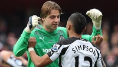
Tim Krul. Hay portero en Newcastle, vaya si lo hay. No hubo ningún gol en Old Trafford en los últimos veinte minutos, pero fueron los mejores de la jornada. El triste United que habíamos visto en anteriores compromisos se volcó sobre el área magpie, valiéndose de superioridad numérica por expulsión de Jonás. Quisieron fusilar a remates al arquero holandés. Estaban Nani, Rooney, Vidic, Chicharito… sospechosos habituales de los tantos postreros. Muchas veces recalcamos que el United salva muchos partidos en los últimos instantes. El espectáculo de ayer nos explica por qué. Van a todas, asedio continuado, y a diferencia del Barcelona en Getafe, ponen centros magníficos a rematadores bien colocados. Una vez el poste, otra un futbolista del Newcastle en línea de gol, y las demás para Tim Krul. El arquero sólo tiene 23 años y ahora mismo es uno de los mejores de la Premier. El encuentro terminó con empate a 1 gol, tantos de Chicharito y Demba Ba. Este último llegó de penalti inexistente. Alex Ferguson lo calificó de esperpéntico.
Juan Mata. El atacante del Chelsea firmó dos asistencias y un gol en la victoria de los blues ante el Wolverhampton Wanderers (3-0). Poco a poco se consolida como líder ofensivo del equipo, custodiado ayer por un Drogbá algo desacertado -pero aún así más peligroso que Fernando Torres, que volvió a ser suplente-, y un creciente Daniel Sturridge. El partido en Stamford Bridge era clave. Un tropezón más significaba descolgarse de forma seria. En un encuentro de tanta exigencia André Villas-Boas confió la manivela del equipo a Oriol Romeu. Formó en el centro del campo con Ramires y Meireles y dio al juego una continuidad que nunca tiene con Mikel y Lampard. El Chelsea mejoró, sobre todo en una primera mitad notable. Villas-Boas tiene ahora un referente donde agarrarse para continuar apostando por este sistema. Algunos futbolistas como Malouda, Anelka y Kalou hace tiempo que no aparecen en las alineaciones. Veremos si el técnico portugués se atreve a sentar de forma reiterada a los pesos pesados del centro del campo.
Theo Walcott. Su progresión es notoria. Se ha ganado el puesto de indiscutible en el extremo derecho gunner. Siempre se ofrece, lo intenta cada vez, ya no es ese futbolista de medias tintas que vimos en temporadas anteriores. Ayer fue el mejor de un Arsenal pobre, que empató en el Emirates frente al Fulham (1-1). Arsène Wenger destacó a posteriori la actitud, pese al resultado, que sus jugadores habían mostrado sobre el terreno de juego. Quizás debía esperarse algo catastrófico, porque de intensidad y ritmo anduvieron escasos. Sobre todo en defensa, en un arranque de segunda mitad horroroso. Dejaron pensar y maniobrar a los delanteros rivales, la presión era tímida y las ayudas a destiempo. Uno veía la capacidad de repliegue y presión defensiva mostrada por el Borussia Dortmund unas horas antes, en el derbi de la cuenca del Ruhr contra el Schalke, y no podía creerse que este Arsenal les hubiera vencido entre semana. Salió en el once Arshavin, antítesis de Walcott por banda izquierda. Van Persie no tuvo su mejor día. Arteta y Ramsey tocaron en la frontal del área pero se les apagaron las luces cuando buscaron combinaciones definitivas. Vermaelen, una vez en la portería equivocada y otra en la correcta, anotó los goles del partido.
El Tottenham venció en West Bromwich (1-3) y se coloca tercero, a dos puntos del Manchester United y con un partido menos. Esta tarde (17.00, C+) se disputa el esperado duelo en Anfield entre Liverpool y Manchester City. Si gana el equipo de Mancini se distanciaria a siete puntos de sus perseguidores.
Fotografía | Newcastle United

Doce años sin impertinencias
Sat, 26 Nov 2011 17:49:32 +0000
Son ya doce años. Doce años que han dado para mucho. Para que por el banquillo del Atleti hayan pasado ni más ni menos que quince entrenadores. Para pasarse una temporadita más larga de lo esperado en el infierno. Para alzarse con un título europeo. Para distanciarse más aún si cabe de su eterno rival [...]
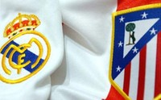
Son ya doce años. Doce años que han dado para mucho. Para que por el banquillo del Atleti hayan pasado ni más ni menos que quince entrenadores. Para pasarse una temporadita más larga de lo esperado en el infierno. Para alzarse con un título europeo. Para distanciarse más aún si cabe de su eterno rival madrileño. Y, sobre todo, para ahondar más, mucho más, en la profunda herida de la rivalidad capitalina. El aficionado atlético se ha acostumbrado a contar las visitas al Paseo de la Castellana por derrotas. Las seis últimas han sido consecutivas. Ante semejante bagaje, la herida no cicatriza. Año tras año se hace más profunda y acaba más expuesta a una posible infección. Cada temporada con derrota en el derby es como un saco de piedras sobre la espalda de la afición atlética. Un ir acumulando peso y presión que hace que la reacción sea cada vez más inimaginable.
Cada semana, y de la mano de bwin.com, os ofreceremos los partidos más interesantes del fútbol mundial, con especial atención a todos aquellos que os manejáis en el mundo de las apuestas on-line.
Cuando el Atlético de Madrid asaltó por última vez el Santiago Bernabéu, lo hizo precisamente con un equipo que acabaría descendiendo a Segunda División en esa misma temporada. Fue en octubre de 1999. Por allí campeaba el holandés Jimmy Floyd Hasselbaink, autor de dos goles en el 1-3 de la noche de autos y, probablemente, el definidor más letal que ha vestido la rojiblanca en los últimos años. También lo hacían futbolistas de talla descomunal, como Juan Carlos Valerón, Rubén Baraja, Santiago Solari o Joan Capdevila. Una notable plantilla pero, sin lugar a excesivas dudas, inferior a la actual. El problema es que si el potencial futbolístico de los atléticos ha crecido al cuadrado, el de los madridistas lo ha hecho al cubo.
La lógica no invita a pensar en que la afición rojiblanca pueda volver a vivir un nuevo sábado noche de fiesta, precisamente cuando la obra de José Mourinho en el Real Madrid comienza por fin a alcanzar cotas de perfección sin precedentes. Puede parecer ingenuo fantasear con una victoria colchonera en el coliseo madridista. Un equipo que es una apisonadora en ataque, que consigue colocar en el césped una pendiente del 45% con caída hacia la portería rival y que cuenta sus últimos partidos como local por goleadas… No. A priori poco podría hacer un equipo tan dubitativo y tan aferrado al sufrimiento como el Atleti frente a tan magna puesta en escena.
Quiero pensar, por el bien de la competición, que las lecturas “priorísticas” no funcionan en un derby. Me gustaría creer que en la mente de los futbolistas rojiblancos no hay lugar para momentos de forma, ni para situaciones clasificatorias, ni para doce años de barbecho insalvable. Porque en un derby la parte pasional suele tener una notable incidencia. Lo complicado es que esa incidencia es muy difícil de cuantificar. Sin la voracidad goleadora de Radamel Falcao, aún no recuperado, los de Manzano son plenamente conscientes de que su potencial futbolístico ha bajado varios puntos. Por eso, se intuye que plantearán un partido áspero, rudo, destinado a no recibir golpes más que a propinarlos. Lo pasional y lo visceral no da para desplegar un fútbol magnífico capaz de doblegar al rodillo blanco, pero quizá sí que alcance para convertir el césped del Bernabéu en un campo de minas, cortocircuitar el cerebro ofensivo del Madrid y lanzar alguna aguijonada certera en alguna contra de José Antonio Reyes, Adrián o Arda Turan. No se me ocurre otro escenario de juego.
A tenor de las cuotas de apuestas ofrecidas en bwin, no parece haber una excesiva confianza en la sorpresa colchonera. Una victoria madridista cotiza apenas a 1.18 euros, mientras que el empate y la victoria visitante lo hacen, respectivamente, a 6.75 y 13.50. Anuncia Gregorio Manzano un partido trabado. Puede ser el preludio de un juego bronco, con faltas constantes en el centro del campo, puede que incluso con alguno de los típicos tumultos entre jugadores en un derby… Apuesten por la expulsión. Un expulsado se paga a 3.30, mientras que si fueran dos o más, lo haría a 7.00. También la apuesta por un elevado número de cartulinas amarillas parece viable. El Over 6.5 en amonestaciones se paga a 2.00 euros por euro apostado.
Camisetas clásicas: el entrenador
Fri, 25 Nov 2011 20:14:52 +0000
“Hoy el público le grita: ¡No te mueras nunca! Y el domingo que viene lo invita a morirse. Él cree que el fútbol es una ciencia y la cancha un laboratorio, pero los dirigentes y la hinchada no sólo le exigen la genialidad de Einstein y la sutileza de Freud, sino también la capacidad milagrera [...]
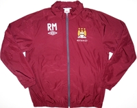“Hoy el público le grita: ¡No te mueras nunca! Y el domingo que viene lo invita a morirse. Él cree que el fútbol es una ciencia y la cancha un laboratorio, pero los dirigentes y la hinchada no sólo le exigen la genialidad de Einstein y la sutileza de Freud, sino también la capacidad milagrera de la Virgen de Lourdes y el aguante de Gandhi”
Eduardo Galeano, El Fútbol a sol y sombra
Aparca el chándal en domingo, no vaya a ser que la muerte deportiva le pille en telas cuotidianas. Hay que estar preparado, traje oscuro y corbata que asoma por el cuello. Siempre que no use bufanda, esa albiceleste que le identifica con el aficionado. La combinación de colores es discutible, pero su procedencia -el italiano es elegante porque sí- le salva de esta crítica. No de todas las demás. Su equipo golea y el estadio corea su nombre, pero el mundo del fútbol atribuye todas sus victorias a los millones del propietario, y las derrotas, que algún día sí suceden, únicamente a su persona. ¡Con esos jugadores lo hago mejor que él, y también gano la liga! -mentimos algunos. Frase recurrente cuando sale al campo Nigel de Jong sustituyendo a Adam Johnson.
De la mano de Classic Football Shirts , la tienda especializada en camisetas antiguas, nos acercamos al fútbol con una perspectiva diferente, desde los uniformes con los que se ha construído la historia del deporte rey.
A veces olvidamos que no todos los días son domingo para el técnico italiano, cuyo trabajo entre semana también suma puntos. Roberto Mancini se viste de seda un día a la semana, ante decenas de cámaras y miles de espectadores. Se sienta en un banquillo de respaldo azul, y ahí permanece los noventa minutos. A veces se levanta para pegar algún grito o levantar el pulgar en señal de aprobación. Tampoco en exceso. Su perfil es más bien calmado, difícilmente irritable, paciente. El resto de días se despierta temprano para llegar el primero a las instalaciones del club. Chándal granate, el suyo, marcado en el pecho las iniciales RM. Se calza las botas y salta al césped como cualquier otro de sus futbolistas. En esas prendas presencia cada día las maniobras delicadas de David Silva, las tonterías de Balotelli y los placajes amistosos de Micah Richards. Convive con ello, ordena y mejora. De vez en cuando empalma una volea y prueba los reflejos de Joe Hart. Su talento continúa vivo en un campo de entrenamiento de Manchester.
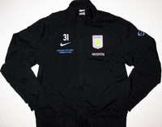
El Daily Record explicaba esta semana la vida tranquila de John Robertson. No hay banquillos en ella. Se pasa las mañanas en una pequeña cafetería de Nottingham haciendo crucigramas. Dos veces a la semana juega al tenis. Cuando no está en la pista piensa en cómo perfeccionar su segundo saque. “Algún día Murray ganará Wimbledon, tiene la esperanza de toda Gran Bretaña”. El veterano entrenador asistente de Martin O’Neill, que le ha acompañado en todas sus aventuras (Grantham, Wycombe, Leicester, Celtic y Aston Villa), espera una llamada del impulsivo técnico irlandés, que se marchó del Villa hace año y medio porque el club decidió vender a sus mejores futbolistas.
O’Neill gesticula y salta. Vocifera de vez en cuando, estudia atentamente después. Su mirada es de blanco o negro, amable o mortal. Inflexible, amante de la táctica y generador de ilusiones. Que no le digan que hay un objetivo imposible. Una vez, hasta dos veces, levantó Copas de Europa con la camiseta del Nottingham Forest. Se curó de milagros cuando era el mediocampista preferido de Brian Clough, aunque se perdió la primera de las finales por lesión.
Cada vez que un entrenador es cuestionado en Inglaterra, la sombra de O’Neill planea sobre su cabeza. Todos quieren al irlandés de éxito, el hombre serio de las gafas negras que trabaja los domingos en chándal y botas de taco.
Puedes comprar estas camisetas y cientos más en Classic Football Shirts.
En DDF | Conversaciones casi privadas: Mancini
Un gol para el príncipe
Thu, 24 Nov 2011 23:00:40 +0000
Hay goles que inmediatamente se emancipan del marcador, que dejan de servir para calibrar la fuerza de dos equipos y se largan de cabeza a la piscina de los recuerdos. No son goles decisivos, a veces son directamente triviales, inútiles, pero su plasticidad los convierte en algo más que un residual lance del juego. Anoche, [...]
Hay goles que inmediatamente se emancipan del marcador, que dejan de servir para calibrar la fuerza de dos equipos y se largan de cabeza a la piscina de los recuerdos. No son goles decisivos, a veces son directamente triviales, inútiles, pero su plasticidad los convierte en algo más que un residual lance del juego. Anoche, en un partido donde el Barcelona volvió a demostrar su talento, Kevin-Prince Boateng marcó uno de esos goles que se quedan en la retina.
PVP. Precisión, velocidad y potencia. Un toque sutil de tacón, una reacción rápida y un disparo imparable al lado controlado por el portero. Zafándose de Abidal en un pestañeo del defensa francés. Un gol de esos que enloquecen al jugador –su celebración lo atestigua- y hacen frotarse los ojos al aficionado. Nos gusta el fútbol porque se inventa partido a partido.
El desorden de campeones
Wed, 23 Nov 2011 21:36:45 +0000
La principal noticia en el entreacto europeo es el disgusto del Manchester City, que tras su derrota en Nápoles ya no depende de sí mismo para clasificarse. Los periódicos británicos abren su edición deportiva con el rostro tenso de Roberto Mancini, calculador profesional: “70% to Napoli, 30% to us”. Los italianos visitan en la última [...]
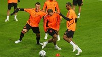La principal noticia en el entreacto europeo es el disgusto del Manchester City, que tras su derrota en Nápoles ya no depende de sí mismo para clasificarse. Los periódicos británicos abren su edición deportiva con el rostro tenso de Roberto Mancini, calculador profesional: “70% to Napoli, 30% to us”. Los italianos visitan en la última jornada al Villarreal, que no se juega nada, y el City recibe al Bayern de Múnich. En la otra latitud de Manchester Alex Ferguson es moderadamente optimista, pero el United no puede fallar en Basilea si quiere pasar como segundo de grupo. Los presumibles máximos rivales de Barcelona y Real Madrid, en apuros.
Con los dos polos de Manchester cuestionados, es interesante preguntarse quién más domina en Europa. Quizá el Bayern, con la vuelta del mejor Ribéry y los goles atropellados de Mario Gómez. ¿El mismo Bayern que este fin de semana perdió en su casa contra el Borussia Dortmund? El equipo del simpático Jürgen Klopp visita esta noche al Arsenal. ¿A quién daríamos por favorito? Pese a todo, pese a las críticas a Wenger, ¡puede que nos parezcan mejores los gunners! Bayern, Arsenal y Dortmund. ¿Quién está por encima de quién? Si el Borussia pierde esta noche y el Marsella vence en casa al Olympiakos, algo nada descabellado, Götze, Kagawa y compañía están fuera.
Puede que el Inter, reciente campeón, líder de grupo, pero pésimo competidor en Italia: solo tres puntos por encima del descenso. A sus vecinos de Milán es difícil catalogarles. Pólvora arriba, experiencia en el centro y algún problemilla atrás. ¿Candidatos? Veremos cómo se portan hoy ante el Barcelona. Porto, Shakhtar, antiguos outsiders: tercero y cuarto del grupo G. Hablemos un segundo del verdugo del Manchester City: Nápoles, a siete puntos del liderazgo en Italia. Sus últimos encuentros en la Serie A no pasan del correcto, a veces ni llegan.
En una edición de la Liga de Campeones convencional los grandes clubes estarían ya clasificados y la diferencia entre la clase A y B claramente definida. En cambio, nos encontramos una situación extraña y excitante: el Apoel chipriota liderando un grupo, el Ajax dentro y el Lyon fuera. El Trabzonspor turco, rebotado a última hora, sería hoy octavofinalista.
Europa altera la relación decidida en las competiciones regionales. Puede que este desorden tenga alguna explicación: el formato, el choque cultural, el factor suerte o la experiencia. Las plantillas de Borussia Dortmund y Manchester City podrán ser muy buenas, pero la primera vez que se aspira es muy complicado conseguir. El factor experiencia es bastante recurrente. ¿Nunca habéis pensado que la Champions League es un torneo un tanto repetitivo? Sus noches empiezan antes de hora, en Moscú, Die Meister, Die Besten, y acaban delante la pantalla del ordenador, consultando los resultados que la televisión no ha querido darnos. ¡Qué sorpresa! Han marcado Inzaghi, Raúl, Eto’o y Drogba.
Drogba. Confieso que los últimos cinco párrafos son una excusa para llevarnos al lujoso barrio londinense de Chelsea. Drogba, Lampard, Terry y Cech, uno por línea. Futbolistas maltratados por el desorden del que hoy hablamos. En un mundo perfecto, de premios merecidos y plena felicidad, el Chelsea hubiera levantado mínimo una orejona en la última década. Pero resbaló Terry, falló Anelka, marcó Park y se hizo eterno Iniesta. Luis García chutó, el balón no pasó la línea, pero aún así fue gol. José Mourinho, Avram Grant, Guus Hiddink y ahora André Villas-Boas. Los blues sufren para vencer entre semana. Victorias por la mínima en Stamford Bridge, alguna goleada de vez en cuando, empates fuera, pero siempre consiguen alzarse por encima del resto en la primera fase. Líderes del grupo E, hoy visitan Leverkusen para certificar su pase.
En la Premier League, después de la derrota frente al Liverpool están a doce puntos del líder. Villas-Boas no encuentra la tecla, le falta un mediocampista capaz de llevar el peso del partido. El equipo no sabe qué hacer con el balón, salvo cuando lo lleva Mata. Se excusa a la dirección técnica porque quisieron a Modric, no pudieron ficharlo y recurrieron a Meireles. Sin embargo, si notas una carencia notable en la plantilla, no basta con un solo refuerzo en la posición. Han aparecido las primeras críticas serias al entrenador. Incluso Vinnie Jones se atreve con pedir la marcha del capitán, John Terry.
Se le pide a Villas-Boas que dé paso a un cambio generacional definitivo. Ha empezado a hacerlo. Sin embargo, la columna vertebral -unos más que otros- aún cuenta con un rol acorde a los galones ganados en el pasado. Seguramente, este año sí, sea el último con estas reglas del juego. El último para levantar la Liga de Campeones. Entre tanto desorden, del Chelsea apenas se habla, apenas se le considera, pero está. Como Drogbá, a las once menos cuarto, detrás del hipervínculo azul del livescore.
Fotografía | uefa.com
Casi cerrando la liguilla
Wed, 23 Nov 2011 06:02:01 +0000
Se acerca ya el final de la ronda inicial de la Liga de Campeones, y con ello el comienzo de la auténtica Copa de Europa. En ella estará el Madrid, firmando la que puede ser mejor clasificación de cualquier equipo en la historia de la competición; hoy ha destruido 6-2 a un bisoño Dinamo de [...]
Se acerca ya el final de la ronda inicial de la Liga de Campeones, y con ello el comienzo de la auténtica Copa de Europa. En ella estará el Madrid, firmando la que puede ser mejor clasificación de cualquier equipo en la historia de la competición; hoy ha destruido 6-2 a un bisoño Dinamo de Zagreb, en una noche que se recordará por el 3-0 en los ocho primeros minutos, el claqué de Benzema y la reivindicación de Callejón. Exactamente el camino opuesto ha completado hoy el Villarreal, arrollado en el Allianz (3-1) por un Bayern que constituye la alternativa clara al poderío español. La gran incógnita ronda Manchester, tras caer el City hoy en San Paolo (2-1) ante un gran Nápoles y un mejor Cavani, y empatar el United en su feudo (2-2) frente al Benfica, en un partido repleto de despropósitos. Los de Fergie deberán ganar en Basilea al equipo de Shaqiri, que cumplió en Otelul (2-3) y ahora depende de sí mismo, mientras que los citizens han de esperar el arranque de dignidad del Villarreal mientras ellos tumban al Bayern. La segunda fase también contará con el Inter, que ha logrado el punto que le faltaba en Trabzon, y casi seguro con el Ajax, empatado a cero en el Arena frente a esta triste versión del OL. A la plaza restante aspirará el Lille, que tiene un tesoro en Hazard, y que conquistó Moscú (0-2) ante un CSKA que perdió su gran oportunidad.
Apuntes de la jornada 13
Mon, 21 Nov 2011 21:52:54 +0000
El enemigo del fútbol. Siempre conviene quitarse lo peor de encima cuanto antes, así que empezaremos por el final, por el estúpido cantamañanas que arruinó la fiesta granadina en una noche que estaba resultando especialmente feliz. Uno entiende al árbitro cuando vio sangrar a su compañero, aunque resulta discutible la suspensión, toda vez que es [...]
El enemigo del fútbol. Siempre conviene quitarse lo peor de encima cuanto antes, así que empezaremos por el final, por el estúpido cantamañanas que arruinó la fiesta granadina en una noche que estaba resultando especialmente feliz. Uno entiende al árbitro cuando vio sangrar a su compañero, aunque resulta discutible la suspensión, toda vez que es un castigo para un público que, en particular, identificó a toda prisa al energúmeno de turno. Lo que no se entiende es que el tipo en cuestión, perfectamente identificado, no recibe un multazo que no pueda evitar recordar en el futuro cada vez que se acerque a menos de un metro de un paraguas. Sobre prohibición de entrar en recintos deportivos no hablamos, que todos sabemos cómo funcionan los tornos en los campos y este artículo no pretende ser cómico.
Los pilares del templo. La vorágine de noticias lo ha ocultado un poco, pero hacía tiempo que el dueto de centrales campeones-de-todo no plantaba sus reales delante de Valdés. Los números defensivos del Barcelona en casa son perfectos, así que habrá que esperar la influencia de la doble P especialmente en los partidos a domicilio, en los que el Barça se está mostrando algo más vulnerable de lo habitual. Para certificar su regreso, tanto el gran capitán como el responsable del invento –Guardiola dixit- dejaron su firma en el marcador del Camp Nou. Gritando con fuerza que están de regreso.
Fuego en Valencia. Es un estupendo goleador, uno de los escasos rematadores de raza que sobreviven en el panorama europeo a la epidemia de falsos nueves, enganches reconvertidos y demás zarandajas que constituyen el no va más del fútbol ultramoderno. Pero cuando a sus cualidades goleadoras añade la rabia del despreciado, el desafío del partido mayúsculo y el ansia de la remontada, Soldado deja de ser un delantero normal para convertirse en una bola de fuego sagrado capaz de incendiar a cualquier enemigo. Dos tantos legales, un golazo anulado y la sensación de alma del equipo para poner en evidencia a Del Bosque y demostrar que él, al menos, sí mereció el empate.
Líder cuando hay que serlo. Sabíamos que era una pieza fundamental del fantástico mecano que montó Garrido la temporada pasada, capaz de aunar como pocos deleite y competitividad. Ahora hemos aprendido que con Rossi hecho pedazos, Nilmar tres cuartos de lo mismo, Senna al borde del retiro y un mundo de bisoñez alrededor, Borja Valero puede cargar sobre sus hombros la triste realidad de un Villarreal en regresión. Frente a un Betis que camina por la senda de toque y distinción que siempre ha caracterizado a los amarillos, Borja ejerció de ancla y pivote, lanzó contragolpes cuando fue necesario, y decidió el partido con una vaselina que nos han repetido muchas menos veces de lo que sería justo. Las tácticas cambian, los jugadores permanecen.
Pasión turca. No se ha hablado mucho de él ni en lo bueno ni en lo malo, ni cuando el Atleti iba a comerse el mundo en Septiembre ni ahora que Noviembre amenaza con tragarse a Manzano. Sin embargo, no es difícil adivinar que una gran parte de las posibilidades del actual proyecto rojiblanco pasan por los pies de este futbolista menudo y talentoso, racional casi siempre y racial cuando toca, que aúna velocidad en corto y fantástico desplazamiento de balón. Ídolo en Turquía, ayer silenció el runrún del Manzanares con una aceleración y un centro perfecto que volcaron definitivamente el partido. Quizá acabe siendo más decisivo que otros con más nombre.
La emotividad. Todos recibimos a diario mensajes hablándonos de niños enfermos o con problemas y necesidad de transplantes, y en cierto sentido estamos inmunizados contra la dureza intrínseca a estas situaciones. Sin embargo, conviene no minusvalorar el poder del fútbol como transmisor de emociones, y resulta imposible no conmoverse ante las lágrimas de Martins dedicando el gol a su hijo. Todo el amor, el miedo, la alegría y la desesperación unidos en un gesto donde se condensa lo mejor de ser futbolista y lo mejor de ser padre. Inolvidable.
Gana una entrada doble para el Real Madrid-Dinamo Zagreb con bwin y DDF
Mon, 21 Nov 2011 16:04:25 +0000
Luka Modrić, Vedran Ćorluka y Niko Kranjčar. Futbolistas de primera fila. Tal vez, los frutos más golosos surgidos de la cantera del Dinamo de Zagreb en época reciente. Hoy, ninguno permanece en el equipo croata, todos han dado ya el salto hacia ligas más importantes, hacia equipos con mayores aspiraciones. Es el eterno sino de [...]
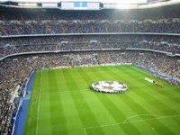Luka Modrić, Vedran Ćorluka y Niko Kranjčar. Futbolistas de primera fila. Tal vez, los frutos más golosos surgidos de la cantera del Dinamo de Zagreb en época reciente. Hoy, ninguno permanece en el equipo croata, todos han dado ya el salto hacia ligas más importantes, hacia equipos con mayores aspiraciones. Es el eterno sino de la imprevisible cantera balcánica. Cada vez que se encuentra una veta de mineral en la roca, se dispara la maquinaria de los clubes más poderosos del continente. Ocurría así hace veinte años y sigue ocurriendo así en la actualidad. Pocos territorios han reunido tanta cantidad de talento en tan pocos kilómetros cuadrados como la antigua Yugoslavia y pocos, muy pocos, han experimentado una diáspora semejante: Robert Prosinečki, Dragan Stojković, Zvonimir Boban, Davor Šuker, Pedja Mijatović, Dejan Savićević… Son solo algunas, quizá las más representativas, muestras del fútbol balcánico de los últimos veinte años.
Pero estamos seguros de que cada uno de vosotros tiene en mente algún otro ejemplo, alguna otra muestra. Por eso, vamos a sortear una entrada doble (para ti y un acompañante) para el partido de Liga de Campeones que enfrentará mañana martes día 22, en el Santiago Bernabéu, al Real Madrid y al Dinamo de Zagreb croata, cortesía de bwin. Para participar en el sorteo, solo tienes que dejarnos un comentario, en este mismo post, contándonos cualquier recuerdo imborrable que guardes en tu memoria de un jugador balcánico (croata, serbio, montenegrino, esloveno, bosnio o macedonio). Quien tú quieras. Nos vale lo mismo el pitillo de Prosinečki que los cinco goles de Alen Peternac con el Real Valladolid el 19 de mayo de 1996.
Para que tu participación sea válida debes dejarnos un email a través del cuál podamos contactar contigo si eres el afortunado ganador. El plazo para participar termina hoy, lunes día 21, a las doce de la noche. Nos pondremos en contacto con el ganador a lo largo de la mañana del martes. Anímate, participa y suerte.
En DDF| GNK Dinamo Zagreb: orígenes
En DDF| Los últimos yugoslavos
El tiempo
Sun, 20 Nov 2011 17:12:35 +0000
Piénsalo bien: el tiempo no existe. Decimos que han pasado unos minutos, unas horas, un día, un año, pero en realidad son meras convenciones. Hay movimiento, hay acontecimientos, pero no hay tiempo como tal. Un segundero es una aguja que se mueve, nada más. No indica nada ajeno a sí mismo. Eso lo ponemos nosotros. [...]
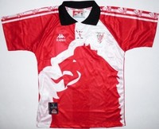
Piénsalo bien: el tiempo no existe. Decimos que han pasado unos minutos, unas horas, un día, un año, pero en realidad son meras convenciones. Hay movimiento, hay acontecimientos, pero no hay tiempo como tal. Un segundero es una aguja que se mueve, nada más. No indica nada ajeno a sí mismo. Eso lo ponemos nosotros.
Hay cambios, eso es innegable. El sol surca el firmamento a un mismo ritmo (el reloj original), las estaciones son más o menos recurrentes. Nuestro cuerpo, nuestro rostro, lo que nos rodea, sufre mutaciones. ¿Es eso tiempo? Sí, pero no. En punidad, son acontecimientos.
¿Y el tiempo futbolístico? ¿Existe? El reloj serían las jornadas, los campeonatos de invierno, los Boxing Days, las temporadas… convenciones, al fin y al cabo.
¿Y los acontecimientos? Ah, eso es otra cosa. Lo que realmente ocurre, el movimiento: los cambios en la plantilla, ese jugador adorado que ahora viste de rival, el presidente al que nadie echará de menos, la reforma en el estadio que hace que parezca otro, el descenso que impide el derby esta temporada, el título que alzamos al cielo… y algo que motiva este post: un cambio estético paulatino, a veces casi imperceptible, pero imparable que hace que un día mires atrás y te sorprendas, pues pareces otro.
Nos pasa a nosotros: ¿qué hay en común en el rostro de ese que fui hace veinte años y quien soy ahora? A veces, casi nada, a penas una sombra o un brillo en la mirada. ¿En qué punto dejé de ser ese que fui, en qué momento exacto se borró la última huella de aquel rostro?
Y con nuestros equipos pasa lo mismo. Echa un vistazo a las equipaciones de los últimos quince años del club de tus amores . Te sorprenderás como con tus fotos antiguas. ¿Realmente vestimos así toda una temporada? ¿Cómo sucumbimos a la moda pasajera de los colores fosforitos, de las formas imposibles? ¿Esos fuimos nosotros? ¿Qué tiene que ver la zamarra del 99 con la de hoy?
Las camisetas, moda futbolera, quedan así ancladas en torno a unos acontecimientos, formando algo que llamamos tiempo humano. Ésta por ejemplo, la veo y recuerdo perfectamente el momento en que mi amigo Jokin (que ya no está) la lució por primera vez, orgulloso ante todos nosotros, que la acariciábamos fascinados con las yemas de los dedos pulgar e índice como antiguamente se hacía con las telas de oriente. O esta otra, ajena a nosotros pero que a todos nos evoca nombres de dioses que derrotamos en una madrugada mágica tantos años atrás. Y qué decir de ésta, tan fea y que sin embargo ha quedado unida por aquel jugador increíble que hizo levantarse del asiento a todo un país
practicando un slalom entre jugadores como si el mismísimo Alberto Tomba condujera un balón.
Porque las camisetas viejas de fútbol son a nuestros equipos -y a nuestros recuerdos futboleros- lo que los pantalones de campana al album familiar. Un elemento que observamos mitad fascinados mitad sorprendidos, que nos hace darnos cuenta cuánto hemos cambiado y evocar lo que fuimos con un poso de nostalgia y cierta tristeza. ¿Paso del tiempo? Ya hemos dicho que en realidad el tiempo es una convención, aunque… ¿qué asunto humano no lo es?
De la mano de Classic Football Shirts , la tienda especializada en camisetas antiguas, nos acercamos al fútbol con una perspectiva diferente, desde los uniformes con los que se ha construído la historia del deporte rey.
Puedes comprar estas camisetas y cientos más en Classic Football Shirts.
Partido de estantería
Sat, 19 Nov 2011 15:37:56 +0000
El delantero germano Heiko Herrlich colgó las botas en 2004. Ya no hay arquero que le muerda. El incisivo Oliver Kahn aguantó cuatro años más. La imagen que ilustra el post data del 3 de abril de 1999. Es una de las diez magníficas fotografías que ha seleccionado la web de la Bundesliga para explicar [...]
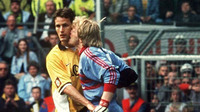
El delantero germano Heiko Herrlich colgó las botas en 2004. Ya no hay arquero que le muerda. El incisivo Oliver Kahn aguantó cuatro años más. La imagen que ilustra el post data del 3 de abril de 1999. Es una de las diez magníficas fotografías que ha seleccionado la web de la Bundesliga para explicar los enfrentamientos entre Bayern de Múnich y Borussia Dortmund. A la escena romántica la acompañan un resultado extravagante (11-1 a favor del Bayern en 1971), Matthäus y Effenberg en situaciones embarazosas, un gigante checo que va al suelo y un último par de imágenes que podrían resumir el duelo. El brazo en alto de Thomas Müller y una suave rosca de Nuri Sahin que se convertiría en gol. Competición y belleza. No hay mejor elección este sábado por la tarde (18.30h) que fijar toda nuestra atención en el encuentro del Allianz Arena.
Cada semana, y de la mano de bwin.com, os ofrecemos los partidos más interesantes del fútbol mundial, con especial atención a todos aquellos que os manejáis en el mundo de las apuestas on-line.
Primer y segundo clasificado. Favorito y campeón. El Bayern hace pleno estadístico: tienen más puntos que nadie (28), más victorias (9), más goles a favor (32) y menos en contra (4), que cualquier otro equipo de la competición. El Dortmund viene 5 puntos por detrás, consolidando una mejora de juego tras un inicio de campaña dubitativo. Aún así, siempre que uno engancha un partido suyo no puede cambiar de canal. Su fútbol es sumamente atrayente, por su vistosidad, elegancia, finura… Aunque no tengan su mejor día estos futbolistas siempre dejan un detalle, normalmente en forma de combinación, una asistencia con el exterior del pie, o una definición, que confirma el enorme acierto que significa seguir sus partidos. Esta temporada pasa lo mismo con el Bayern, un conjunto arrollador, hambriento y divertido. Si llegas tarde y ya ganan 4 a 0, quédate, porque van a querer el quinto.
No sabría cómo definir el partido, al menos en la previa. En Alemania hablan de “Duell del Superlative”, una prueba de fuerzas clarificadora. ¿Tendrá el Dortmund potencial para volver a pelear el título? ¿Hasta qué punto es dominador el Bayern? Es un partido para ver. Para ver y para guardar. Lo que podríamos definir cómo un partido de estantería. Y de ahí, donde se guardan los libros desde la primaria, recojo unos cuantos títulos para completar este post, a riesgo de repetirme y relacionar toda obra de literatura fantástica con la genial figura de Mario Götze.
El abominable hombre de las nieves. En la contraportada se le define como un ser enorme y peludo. El ucraniano Anatoliy Tymoschuk es un hombre trascendental en el centro del campo del Bayern. Con Bastian Schweinsteiger lesionado, su participación ante el Dortmund iba a ser clave. Sin embargo, fue expulsado en el último encuentro liguero contra el Augsburgo, dejando pocas opciones a Heynckes para confeccionar la alineación.
Nuevas aventuras Robinson Crusoe. Los editores de Diarios de Fútbol están divididos en cuanto al ariete Mario Gómez. Rematador implacable o tronco suertudo. Su temporadón invita a pensar, de momento, lo primero. Náufrago cuando su equipo elabora, interviene una sola vez para el toque final. 20 goles en todas las competiciones esta temporada.
Los cinco en la isla del tesoro. Cuando el balón sobrepasa la medular, el fútbol del Dortmund es una historia de hacer amigos. Mortiz Leitner (18) ha sido el último en llegar. Kevin Grosskreutz (23), Mario Götze (19), Shinji Kagawa (22) y Robert Lewandowski (23) son los otros miembros del grupo, aventurero y desacomplejado, capaz de resolver los misterios del gol con la participación de todos en cada jugada.
Viaje al fin del mundo. Es el camino que muchas veces toma Arjen Robben. Coge en balón en un punto indeterminado del terreno de juego y nunca sabes hasta dónde llegará su peripecia. Vuelve a la convocatoria tras su operación en la ingle a principios de octubre. Parece que se quedará en el banquillo, pero Heynckes ha dejado entrever que tendrá minutos.
Poesía escogida. La firma Mario Götze. Por lo bello de sus pases y arrancadas y la perspicacia de sus ideas. Su obra es de fácil comprensión. A veces mira a un lado y pasa al otro, pero su lenguaje es el del aficionado.
Frases de fútbol. En el capítulo de tópicos pondríamos al veterano técnico del Bayern, Jupp Heynckes: “Se ganará si damos nuestro máximo”. Jürgen Klopp requeriría una atención mayor. Preguntado por una encuesta de la revista Kicker, que da un 49’9 de posibilidades al Borussia de ganar el partido, respondió: “Porque muchos más fans del Dortmund leen el Kicker”.
Las apuestas en bwin.com para este partido son muy atractivas. Para empezar, si creemos que el Dortmund ganará en Múnich, como ya hizo la temporada pasada (1-3), la cuota se paga a 4.75€ por euro apostado. La victoria local a 1.65 y el empate a 3.90. Nos la jugamos a gol de Mario Gómez, a la buena cuota de 2€, y también al gol de Götze, a 3.75€. Para un partido donde parece que habrá muchos goles, es interesante fijarse en las cuotas de los demás futbolistas, todas por encima del par y muy interesantes.
Fotografía | Bundesliga
La Play
Fri, 18 Nov 2011 17:47:15 +0000
Un martes de noviembre. Por la mañana he conseguido romper la pereza y madrugar para ponerme a escribir. A las ocho y media ya estaba tomando café frente al ordenador. He terminado un artículo que tenía apalabrado con la revista de música con la que colaboro habitualmente. Después, he trabajado un rato en la novela. [...]
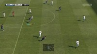
Un martes de noviembre. Por la mañana he conseguido romper la pereza y madrugar para ponerme a escribir. A las ocho y media ya estaba tomando café frente al ordenador. He terminado un artículo que tenía apalabrado con la revista de música con la que colaboro habitualmente. Después, he trabajado un rato en la novela. Siempre la novela. ¿La terminaré algún día?
A las doce y media, cansado de escribir, me he duchado y vestido. Después, he ido al mercado a hacer algo de compra. Hacía buen tiempo, cosa rara en Bilbao. De vuelta al piso, he leído durante un rato (Bashevis Singer) y he cocinado. Últimamente me relaja cocinar. Jamás pensé que la cocina podría ser agradable. Ha llegado Naia (así se llama ella) y hemos comido viendo la televisión.
Después ha marchado a la oficina. Aún nos besamos apasionadamente en cada despedida, y eso me hace feliz. Llevo con ella tres años, el último conviviendo. Cuando la puerta del ascensor la oculta corriendo su telón metálico pienso que le quiero.
Recojo la mesa y friego rápido. Odio fregar. Cuido de no dejar restos en el estropajo, que sé que le molesta. Convivir es hacer propias las manías del otro, me digo, y pienso que es una pena tener las manos mojadas, porque debería apuntar esa frase.
Por la tarde escribo un rato más, pero las palabras no fluyen. Recuerdo que cuando era más joven solo escribía de noche, rodeado de cigarrillos, chimeneas de mi pequeña factoría de letras. Sin embargo ahora solo soy capaz de hacer avanzar los textos por la mañana, en pijama.
Hastiado, llamo a Javi y quedamos para tomar un café en el Lamiak. Siempre nos vemos en la misma mesa del segundo piso Es una costumbre idiota, pero que nos gusta mantener. Me cuenta que está feliz porque por fin tiene fecha para exponer sus últimos trabajos. Hablamos de arte, de literatura, de música, de la vida y de la muerte. Juntos visitamos después un par de exposiciones.
Dejo a Javi y marcho corriendo a una entrevista de trabajo -¡nadie vive de escribir!- de la que no me llamarán, pero a la que debo acudir si quiero que el INEM, de tanto en cuanto, siga ofreciéndome algo.
Ya son las ocho y media de la tarde. Naia no llegará dentro de una hora, ha quedado para tomar algo con una amiga tras el trabajo. Estoy cansado, mentalmente cansado, y no me apetece escribir. Hago un zapping de inercias entre cadena y cadena. Aburrido, decido jugar un rato a la Play Station, por supuesto al juego de fútbol.
Mientras carga, pienso que voy a jugar a que fichaba por el Fulham. Me imagino a mí mismo en una rueda de prensa en Londres. “No puedo prometer goles”, diría, “Sólo entusiasmo y esfuerzo”. El juego ha cargado. Tengo un jugador creado a mi imagen y semejanza –idealizada imagen y semejanza, por supuesto-. Entro en el editor y lo saco del Werder Bremen para trasladarlo a Londres. Empiezo una liga y el sorteo depara un primer partido de altura Arsena-Fulham. Me imagino el ambiente previo al mismo. El Arsenal sabe que no lo tendrá fácil, pero el Fulham promete guerra. En un derby, además, nunca se sabe lo que puede pasar.
Los jugadores virtuales saltan al campo. Entre ellos, ese que soy yo. Forman frente a los fotógrafos. Los flashes son relámpagos de popularidad. En la pantalla aparece la alineación con la que el modesto equipo de Craven Cottage se enfrentará su todopoderoso vecino. En la punta de ataque el nuevo delantero español llegado del Werder Bremen, con el número 17 a la espalda, formará junto Bobby Zamora y Moussa Dembélé. ¡Martin Jol sale al Emirates con tres puntas!
Comienza el partido. Últimamente no juego mucho, y he perdido práctica. Sin embargo, mi Fulham consigue resistir las embestidas de los gunners. El primer tiempo termina con empate a cero. Comienza el segundo al tiempo que oigo la puerta de entrada. Saludo a Naia desde el sillón y le digo que espere un momento, que ahora apago la Play. Se sienta a mi lado. En la pantalla, Dickson Etuhu da un preciso pase en profundidad a Dempsey, que ha caído en desmarque a la banda izquierda. El estadounidense sienta a su defensor con un espléndido regate y cuelga un hermoso balón al pico del área. Desde allí, el número 17 del Fulham empalma el balón con su pierna diestra y éste entra por la escuadra de la portería de Szczęsny, quien no puede hacer nada para impedir el gol. El Emirates, silenciado, atiende al júbilo de los hinchas cottagers. Los jugadores se abrazan. Cuando la melé se abre, el delantero emerge. La cámara se detiene en él en primer plano, Sonríe feliz. Entonces, en la parte baja de la pantalla aparece un rótulo que lo identifica como autor del 0-1:
Number 17: NARVAL
- ¡Si eres tú! –ríe Naia, señalando la televisión- ¿Pero cómo puedes ser tan infantil? –me dice, y me besa la frente antes de salir del salón.
Yo apago la Play, no sin antes terminar el partido y salvar la temporada (en el sentido informático del término) y de pronto, me invade una profunda sensación de vergüenza. Me ruborizo. No puedo evitarlo, me siento como si me hubiera pillado masturbándome.
Cenamos juntos y hablamos de cómo nos ha ido la tarde. Le digo que he estado con Javi y que he acudido a la entrevista de trabajo, pero que no tengo mucha ge. Ella me cuenta que a la oficina hoy han ido unos tipos de lo más raro, pidiendo un presupuesto para una obra millonaria. Reflexiona en alto sobre lo engañoso de las apariencias, ya que aquellos tenían pinta de no tener un chavo y resulta que estaban forrados. Mientras habla, intento imaginar qué pensara ella de mí cuando me ve jugando a ser lo que no seré ya nunca, seguir recreando un sueño de infancia. Y de nuevo me siento profundamente mal.
¿Por qué sentimos vergüenza de nuestras fantasías? ¿Por qué nos sentimos tan indefensos cuando revelamos involuntariamente nuestros sueños? ¿Por qué residen en lo más íntimo de nosotros?
Y en lo relativo a Naia, a mí, a nosotros. ¿Cuándo dejaré de ser un niño? ¿Se puede ser un padre de familia y seguir jugando a aquello que te apasionaba cuando tenías diez años?
Ella duerme. Le abrazo con fuerza, huelo su pelo, recuerdo cuando nos conocimos. Otra vez me digo que la quiero. Pero esta vez con un pensamiento inédito: quizá si la amo tanto es también porque ella sonríe ante el niño que sigo siendo. Quizá no deba avergonzarme. A ella no le importa. Nunca se burlará de mis sueños, aunque sean infantiles, aunque estén caducos y jamás se cumplan, aunque no casen con qué soy de cara terceros, aunque los recree a veces a través de una máquina.
Duermo.
Sueño.
Sueño que el Fulham llama a mi puerta.
Una lanza por la Roja
Thu, 17 Nov 2011 22:24:03 +0000
Vientos de pesimismo soplan alrededor de la selección española tras los últimos dos amistosos que han llenado (?) estas fechas FIFA. Dejando aparte la oportunidad de los eventos, lo impresentable del viaje a Costa Rica y la catadura del tal Villar –asuntos que ya han hecho correr los debidos, siempre escasos y siempre insuficientes ríos [...]
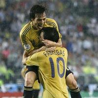 Vientos de pesimismo soplan alrededor de la selección española tras los últimos dos amistosos que han llenado (?) estas fechas FIFA. Dejando aparte la oportunidad de los eventos, lo impresentable del viaje a Costa Rica y la catadura del tal Villar –asuntos que ya han hecho correr los debidos, siempre escasos y siempre insuficientes ríos de tinta- es evidente que las sensaciones deportivas dejadas por nuestro combinado no han resultado halagüeñas. Al “exceso de retórica” de Wembley –conocido en otros ámbitos como apoteosis del bostezo- siguió un primer tiempo indigno y vergonzoso en San José, coronado con un 2-0 que uno podría calificar tranquilamente de kafkiano si su realidad no fuera tan inquietante. Sólo una ración de la tan denostada furia –personificada curiosamente en Iniesta, el más fino de los futbolistas- y la salida de David Silva evitaron males mayores, al menos en el luminoso.
Sin embargo, da la impresión que para un número no despreciable de aficionados el campeón de Europa y del Mundo, no conviene olvidarlo, se encuentra bajo sospecha. Las sucesivas decepciones de los amistosos, la discutida necesidad del doble pivote, la elección del nueve y ese ritmo parsimonioso, falto de profundidad y chispa, con el que España nos ha torturado en algunos momentos, están produciendo reacciones entre la afición que en algunas ocasiones llevan directamente a la boutade, tipo pedir la dimisión de Del Bosque. Parte del público se ha acostumbrado tanto a ganar que una mínima curva descendente semeja una hecatombe, y todo lo que no sea abrumar al contrario con una catarata de goles y ocasiones da lugar a que se cuestione hasta al que vende las almohadillas, mucho más el modelo. Una manera de jugar de la cual no puede discutirse que, guste más o menos, ha garantizado competitividad y copas donde hay que mostrarlo, en los grandes torneos. Y ojo, que España ha ganado todos los partidos de la fase de clasificación, algo que no se consigue ni con la plasta controlada de Londres ni con el horror anárquico sobre el patatal centroamericano. El modelo es la base, la arcilla, y el fuego del horno lo brinda la motivación, algo que sin duda ha escaseado en los últimos diez días. Si ya las fases previas no son en absoluto indicador de lo que ocurre cuando realmente llega lo importante –pregunten a Clemente y a sus récords- imagínense un par de amistosos a destiempo. Mandarlo todo por la borda entra en el terreno del nonsense.
Aparte de estas críticas coyunturales, aunque en parte causante de ellas, hay otro peso injusto que carga la selección sobre sus espaldas, y que condiciona muchísimo la mirada a partir de la cual se la juzga. En medio de la borrachera de títulos, hubimos de soportar una avalancha de hipérboles y ditirambos calificándola de nada menos que “el equipo de todos los tiempos”, “la gran referencia universal”, “el más justo campeón jamás visto” y barbaridades por el estilo. En la distancia, parece que el recuerdo se ha embellecido hasta el punto de distorsionar la realidad y dejar en la memoria una imagen de la Roja como apisonadora continua que, simplemente, es falsa. Los dos torneos conquistados –bastante gloria es ésta ya- en sus fases decisivas, dejaron un tiempo maravilloso contra Rusia, dos buenos partidos contra Alemania, lucha igualada frente a Holanda e Italia, un rosario de victorias apretadas y algunos golpazos de suerte de ésa que antes siempre nos faltaba. Sin embargo, la catarata de exageraciones y la negación de la realidad mantiene a mucha gente en una suerte de limbo feliz, pidiendo incluso para Polonia-Ucrania un hipotético grupo formado por Alemania, Francia y Portugal. Como si ganar la Eurocopa fuera pan comido. Más gallitos que nadie.
Los extremos son muy malos en el fútbol, y ni el endiosamiento ni la crucifixión suelen conducir a nada positivo, especialmente si vienen dictados por el corto plazo. Si la España actual será una selección que marque época no sólo por títulos sino también por fútbol, lo sabremos dentro de veinte años, no ahora. Si el equipo nacional sigue en el culmen de su competitividad o, por el contrario, ha comenzado la decadencia y cada vez es más presa fácil del rival, empezaremos a saberlo en junio, en las lejanas tierras orientales. Hasta entonces, seamos conscientes de que tenemos una gran selección que genera enorme respeto, que a lo mejor no arrasan tanto como unos dicen pero serán, donde importa, mucho más duros de roer de lo que piensan otros, y sobre todo, que estos tipos y este entrenador merecen un voto de confianza. Aunque sólo sea porque nos dieron dos noches que ninguno olvidaremos jamás. Lo demás, el tiempo lo dirá.
Mónaco, regreso al pasado
Wed, 16 Nov 2011 22:00:15 +0000
“Si en estos momentos se hiciera un sondeo saldría como claro favorito el Barça, pero yo continúo creyendo en las posibilidades del Mónaco. Estoy seguro de vencer hoy, aunque es cierto que ellos nos superan en los extranjeros, pues disponen de cuatro de grandísimo nivel. Pero, no obstante, soy optimista, y si estamos al cien [...]
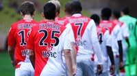“Si en estos momentos se hiciera un sondeo saldría como claro favorito el Barça, pero yo continúo creyendo en las posibilidades del Mónaco. Estoy seguro de vencer hoy, aunque es cierto que ellos nos superan en los extranjeros, pues disponen de cuatro de grandísimo nivel. Pero, no obstante, soy optimista, y si estamos al cien por cien les podemos superar. Además, estoy convencido de que dentro de 2 o 3 años el Mónaco estará a la misma altura que el Barcelona”.
Son declaraciones de Arsène Wenger en abril de 1994, entonces técnico del Mónaco. Las hemos recuperado gracias a la hemeroteca de Mundo Deportivo. El optimismo le definía antes de la visita del conjunto azulgrana al principado. Analizaba a su adversario y le veía más débil que dos años antes. Creía que los espacios reducidos, en comparación con el Camp Nou, del estadio monegasco jugarían a su favor, pero tampoco esperaba un rival excesivamente alegre: “Cruyff ha sido realista en la Liga de Campeones y ha aparcado cualquier tipo de romanticismo”. Esa noche, abarrotado el Louis II con 16.000 espectadores, un solitario tanto de Hristo Stoichkov daría la victoria a los visitantes.
El pronóstico de Wenger no se cumplió, y aunque años después el Mónaco ganara dos campeonatos (1997 y 2000), y llegara a la final de la Liga de Campeones (2004), la época del entrenador alsaciano fue más exitosa. Siete años en la élite del fútbol francés. Primero con los ingleses Mark Hateley y Glenn Hoddle en punta, jubilados después por el talento de George Weah. Wenger fichó a un mediapunta de 23 años de su misma ciudad, Estrasburgo, y nos presentó a Youri Djorkaeff. Bien prontito empezó Emmanuel Petit, a los dieciocho cubriendo el flanco izquierdo. En la derecha corría Lilian Thuram. Por delante de la zaga repartía Claude Puel. Cuando Weah se marchó a París vino Jürgen Klinsmann. El Mónaco de Wenger fue campeón de liga en su primer año al cargo (1988), aunque en los cinco siguientes siempre quedaron en segunda o tercera posición, superados por el Olympique de Marsella
El gran OM de Papin, Völler y Deschamps, que ganó cuatro ligas consecutivas, se acabó cuando se descubrió que su presidente, Bernard Tapie, tenía el hábito de hacer amigos en las plantillas de sus rivales. Pagando, claro. Después de conquistar Europa en 1993 -el súmmum de la obra de Tapie- el Marsella descendió a segunda división por amañar partidos. Años más tarde, ya cómo entrenador del Arsenal, Wenger se refirió al affaire marsellés: “Fue una de las razones por las que me marché de Francia. Todo el mundo sabía que lo hacían muchas veces, sobornar a tres jugadores de un equipo. Nosotros terminábamos segundos, cada año detrás suyo” (The Professor, Myles Palmer)
El Mónaco de Wenger sólo tuvo una oportunidad para lucirse sin el Marsella de por medio. Fue la temporada 93/94. En abril, después de aquél encuentro contra el Barcelona -pese a la derrota, el formato era distinto- llegarían a las semifinales de la Copa de Europa. Allí tendrían pocas opciones ante el Milan de Fabio Capello, que les vencería por 3 goles a cero y después repetiría exhibición ante el Barcelona en la final de Atenas. Sin embargo clasificaron novenos en el campeonato francés y Wenger fue destituido al poco de empezar la siguiente temporada.
A veces mirar hacia atrás es el único consuelo. El Mónaco actual es colista en la segunda división, once puntos en catorce encuentros. Después de jugar con el descenso en las últimas temporadas finalmente bajó en la pasada, y tras el fatal desenlace varias de sus estrellas dejaron el equipo. Por ejemplo los delanteros Chu Young Park (Arsenal) y Dieumerci Mbokani (Anderlecht) o el arquero Sthéphane Ruffier (St.Ettiene). Llevan seis partidos sin ganar y en el Louis II apenas se congregan 4.000 espectadores. Su entrenador es el ex futbolista italiano Marco Simone, que asegura que el equipo hace un fútbol para obtener mejores resultados. Destaca en positivo la calidad del grupo y en negativo que el equipo baja los brazos cuando les meten un gol. Ludovic Giuly (36), que volvió al club este verano para ofrecer su último servicio, es la cara más visible de la plantilla. Todos asumen que no regresaran a la primera división este año. El optimismo monegasco tiene hoy un límite.
Fotografía | AS Monaco
La banda de Slaven
Tue, 15 Nov 2011 20:11:26 +0000
A Croacia siempre se la espera. Es uno de esos equipos a los que apetece ver. Y más aún si es una gran cita. Pocas selecciones nacionales reúnen a tal cantidad de grandes futbolistas y se desempeñan con un estilo tan alegre y agradable para el aficionado. Mario Mandžukić, Eduardo, Ivan Rakitić, Darijo Srna, Vedran [...]
A Croacia siempre se la espera. Es uno de esos equipos a los que apetece ver. Y más aún si es una gran cita. Pocas selecciones nacionales reúnen a tal cantidad de grandes futbolistas y se desempeñan con un estilo tan alegre y agradable para el aficionado. Mario Mandžukić, Eduardo, Ivan Rakitić, Darijo Srna, Vedran Ćorluka o Niko Kranjčar son algunos de los principales pilares del equipo croata. Calidad y carácter a partes iguales. Además, si a una excelente base le añades un futbolista capaz de desequilibrar partidos por sí solo y de elevar el rendimiento de sus compañeros varios puntos por encima de lo habitual, la fórmula parece incuestionable. A Luka Modrić (Zadar, 1985) se le señaló muy pronto, cuando aún apenas había demostrado nada, como el gran referente de la brillante generación croata que debía de dar un golpe en la mesa con su fútbol alegre y atrevido. Quizá, de entrada, le vino algo grande el papel.
Así, Croacia naufragó frente a las costas turcas en cuartos de final de la Euro 2008. Había conseguido pleno de victorias (y el primer puesto de su grupo) en la fase de liguillas. Todos la apuntaban como una de las favoritas para llegar hasta semis o incluso la final… pero el sueño del joven equipo de Slaven Bilić acabó interrumpido con una estrepitosa tanda de penaltis en la que apenas atinaron con uno de los cuatro lanzamientos ejecutados. Pudo ser la (mala) suerte. Pero también pudo ser la incapacidad para derribar las murallas de una rudimentaria Turquía durante 120 minutos de juego.
La oportunidad para la redención de aquel completísimo plantel llegó con la fase clasificatoria del Mundial sudafricano. En un complicado grupo, junto a Inglaterra y Ucrania como principales rivales por la clasificación, los croatas terminaron sucumbiendo, no siendo siquiera capaces de alcanzar el segundo puesto para jugar la repesca. Tras haberse deshecho de los ingleses en la fase de clasificación de la Euro 2008, los de Capello humillaron a Croacia con un 1-4 en Zagreb y un 5-1 en Wembley. Cumplida venganza albión.
La banda de Slaven, puro carácter balcánico como futbolista y como seleccionador nacional, y verdadero alimento del espíritu de este grupo, buscaba redención. Con la mayoría de los futbolistas que sucumbieron en las dos citas anteriores merodeando alrededor de los mejores momentos de sus respectivas carreras, las opciones croatas se tambalearon muy seriamente tras la inesperada derrota en Tiflis ante Georgia, allá por el mes de marzo. Pero Croacia se repuso ganando todos los partidos que restaban a excepción del disputado en Atenas, ante una Grecia a la que fútbol parece querer dar las alegrías que la economía le niega rotundamente.
Con el pase a la repesca, a Croacia, experta en estas lides, se le ofreció una oportunidad de venganza idéntica a la que un par de años atrás el propio combinado balcánico había servido a la nueva Inglaterra de Capello. Enfrente, Turquía. La que los desquició en Viena. La que tiró por tierra los sueños de una selección tan ilusionante como joven e inexperta. Pero ahora la banda de Slaven es otra. Ha madurado. Luka Modrić no es una apuesta, sino una realidad. Lidera a uno de los equipos potentes de la Premier League y sabe de lo que va esto. El fútbol lo tienen y ya solo resta que Bilić consiga domar la anarquía y la visceralidad que domina el juego de su banda.
Victoria a domicilio contra la mafia
Mon, 14 Nov 2011 15:00:48 +0000
Ya lo habréis leído por ahí pero apetece destacarlo porque solo muy de vez en cuando el fútbol devuelve un gesto que le honra. Como nueves italianos entre defensas tupidas, en ocasiones nace una planta entre el asfalto. Ha ocurrido ahora. La selección italiana ha preparado su partido ante Uruguay en las instalaciones deportivas de [...]
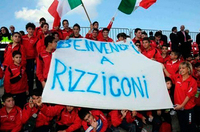Ya lo habréis leído por ahí pero apetece destacarlo porque solo muy de vez en cuando el fútbol devuelve un gesto que le honra. Como nueves italianos entre defensas tupidas, en ocasiones nace una planta entre el asfalto. Ha ocurrido ahora. La selección italiana ha preparado su partido ante Uruguay en las instalaciones deportivas de Rizziconi, construidas por el estado italiano en terrenos confiscados a la mafia. Italia jugó en el campo que era algo más que un campo de fútbol.
Rizziconi es un pueblito calabrés cuyos campo son especialmente fértiles en lo que se refiere a un par de productos típicos: los olivos y los mafiosos. Uno de estos frutos de la tierra es Teodoro Crea, un humanista del crimen que desde su posición de mando en la ‘Ndrangheta tocó todos los palos de la actividad delictiva (el contrabando de tabaco, drogas y armas, la extorsión o el negocio de la prostitición eran algunas de sus ocupaciones conocidas) hasta que fue arrestado en 2006. Antes de que le echaran el guante Crea planeaba hacer negocio con la gestión de la basura construyendo un vertedero enorme en Rizziconi pero el estado le arrebato la propiedad tras el arresto y en su lugar construyó un campo de fútbol. Un campo que nadie ha podido usar hasta hace dos telediarios.
Cristales apedreados, puertas rotas y un silencio incómodo han pintado el paisaje del campo de fútbol de Rizziconi desde su construcción. ¿Quién va a pisar un césped que creció en terrenos arrebatados a una de las familias más influyentes en el crimen organizado calabrés? ¿Quién se iba a atrever a cometer semejante desaire al boss? Hoy lo hecho la selección italiana con Cesare Prandelli a la cabeza y símbolos como Genaro Gatusso en el lote para reforzar un acto cargado de simbolismo. Olvidando la basura, volvió el público a agolparse para ver solo fútbol y no hubo más tiros que los que acordaron los futbolistas. El campo de fútbol que era más que un campo de fútbol retomo durante unas horas su utilidad original. No me digan que no es noticia.

Equilibrio Keita
Sat, 26 Nov 2011 23:00:01 +0000
Una hora antes del comienzo se filtran las alineaciones de Milan y Barcelona. Otra vez un enigma azulgrana. Los analistas radiofónicos empiezan a discutir cuál será disposición táctica y la mayoría acierta en designar una defensa de 3 hombres, pero lo más complicado era situar lo que venía por delante. Había roles repetidos, un rompecabezas que [...]
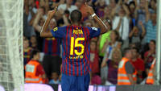Una hora antes del comienzo se filtran las alineaciones de Milan y Barcelona. Otra vez un enigma azulgrana. Los analistas radiofónicos empiezan a discutir cuál será disposición táctica y la mayoría acierta en designar una defensa de 3 hombres, pero lo más complicado era situar lo que venía por delante. Había roles repetidos, un rompecabezas que finalmente se tradujo en nuevas posiciones de Thiago y Cesc, falsos delanteros, mientras Busquets y Keita compartían contención en la medular. Xavi, aparentemente en su posición habitual, ese día se descolgó como nunca hacia el área. Fue protagonista de los tres tantos barcelonistas. Molestó a Van Bommel en el primero, fue objeto de penalti en el segundo y anotó el tercero, otra vez en zona de remate libre de presión. Una noche de inspiración llegadora del centrocampista de Terrassa, justo el día en el que más protegida estaba sus espalda.
Existen varias teorías sobre el desarrollo del Milan – Barcelona. La prensa italiana habló muy bien del juego milanista y magníficamente del culé, considerando el partido una obra de arte: “Grande Milan, troppo Barça” – tituló La Gazzetta. En esta línea se expresa Ramón Besa en su crónica desde Milán. El otro punto de vista se centra en el descontrol defensivo del Barcelona, culpa al desorden a la defensa de tres y va más encaminado hacia el análisis de un partido tácticamente deficiente. En mi opinión, esta segunda visión resta mérito a la capacidad de los delanteros del Milan para desarbolar el orden azulgrana. Boateng, Ibrahimovic y Robinho trazaron movimientos tan impredecibles como Cesc o Messi en el otro costado. Esto siempre ha sucedido en Milán, incluso en las temporadas que han tenido un equipo físicamente justito. Dos años atrás, con Ronaldinho, Pato y Huntelaar, el Milan le pegó un repaso de fútbol al Manchester United en San Siro en octavos de final. La primera mitad milanista fue excelsa, pero en la segunda apareció Wayne Rooney y les castigó al contragolpe. Terminado el encuentro quedó la imagen del pobre y viejo Milan, olvidando el brillante juego que habían ofrecido durante muchos minutos.
La supuesta deficiencia táctica conlleva falta de competitividad y en cambio se percibió un partido de exigencia máxima. Mascherano, sobrio durante todo el año, las pasó canutas. Puyol trabajó a destajo. En cada lance del juego se desprendía una intensidad brutal. Acostumbrados al dominio abrumador del Barcelona en prácticamente la totalidad de sus encuentros, parece que también debiera ir a San Siro, ante ochenta mil espectadores, y no dejar respiro al campeón de Italia. Las distancias no son tan amplias como para imponerse paseando en los campos más difíciles de Europa. Puede que influya la equivocada imagen que se tiene del Milan, la del geriátrico encubierto. El Barcelona de Guardiola también ha empatado en Lyon, Stuttgart, Kazán, entre otras visitas complicadas, y no tuvo la mitad de superioridad que mostró en el encuentro del miércoles, un divertimento continuo.
En este tipo de partidos, noches de Champions League en estadios complicados, no suele fallar en el once inicial Seydou Keita. Como tampoco en San Mamés, siempre titular desde su llegada al Barcelona excepto en el encuentro de esta temporada. Se le define por equilibrio. No es un gran generador de fútbol ni tampoco un destructor al uso, pero su faceta más destacada es la de recuperador en fase ofensiva para que el equipo continúe el asedio. En lo que va de Liga ha jugado 552 minutos, recuperando 58 balones y perdiendo 24. Estadísticas un pelín superiores a las de Sergio Busquets (54/30), que sin embargo ha jugado un poquito más (771 m.). Únicamente Mascherano (91/20) y Dani Alves (66/86) han recuperado más balones, aunque jugando casi el doble que el malí.
En los últimos tres partidos Keita ha sido titular y su presencia en el último mes ha ido subiendo exponencialmente. “Es el centrocampista más diferente que tenemos y a veces le necesitamos mucho” – siempre que puede Pep Guardiola se deshace en elogios. El miércoles recuperó seis balones, contuvo la creatividad de Aquilani -los problemas del Barça fueron más atrás-, y la única vez que pisó área produjo el centro que remataría torpemente Van Bommel. Pese al ímpetu de Guardiola por diferenciarle del resto pocos le situarían entre sus preferencias de la plantilla. Hay una corriente de opinión que defiende que ahora está disfrutando de minutos porque más adelante, en el tramo decisivo de la temporada, no los podrá tener. ¿Llegará como titular a Madrid? Si lo es esta noche, ante el Getafe (22.00h), poco comentario habrá. El encuentro decisivo es el 10 de diciembre y Keita el oficial del equilibrio en las tareas más complicadas.
Fotografía | FC Barcelona
Khedira: ‘Un derby siempre es un partido muy difícil‘
Sat, 26 Nov 2011 17:09:31 +0000
El centrocampista blanco, en una entrevista exclusiva para la plataforma de juego online bwin.com, ha hablado sobre las claves del derbi madrileño, del encuentro Málaga-Villarreal y de su papel en la selección alemana. A tan sólo cuatro jornadas del ecuador de la Liga, el Madrid se encuentra en un momento óptimo, encabezando la clasificación tanto [...]
El centrocampista blanco, en una entrevista exclusiva para la plataforma de juego online bwin.com, ha hablado sobre las claves del derbi madrileño, del encuentro Málaga-Villarreal y de su papel en la selección alemana.
A tan sólo cuatro jornadas del ecuador de la Liga, el Madrid se encuentra en un momento óptimo, encabezando la clasificación tanto de Liga como de su grupo en Champions. Sin embargo, el Barça y el Valencia le pisan los talones a tres y cuatro puntos respectivamente, por lo que los resultados de este fin de semana pondrán los marcadores y la clasificación al rojo vivo.
A pesar de esto, Sami Khedira es realista y sabe que, para alzarse con el título de campeones de Liga, no deben bajar la guardia: “Hemos empezado la temporada pensando en el título y estamos en un buen momento. Tenemos que trabajar duro, continuar acumulando victorias”, comenta.
También tiene en cuenta que el partido del sábado ante su rival histórico y con jóvenes de talento que despuntan, será un partido complicado: “Un derbi siempre es un partido muy difícil. Por supuesto que lo queremos ganar, pero no va a ser fácil”. Y tiene claro los objetivos del equipo: “Tenemos que salir muy concentrados como en los últimos partidos, jugar con agresividad, tener una buena circulación del balón, lo que ayudará a crear ocasiones de gol”, asevera.
Esta es la segunda temporada del alemán en el Club merengue y se encuentra más que consolidado en el equipo. Prueba de ello es la estrecha amistad que le une con Özil, sobre el que opina: “Ha ido desarrollando su nivel de juego desde su llegada. No sólo juega de manera excelente como el año pasado, sino que ha ganado en regularidad, juega de manera muy inteligente”. Y añade: “Se sacrifica también por el equipo, tiene un trabajo defensivo muy grande y eso el equipo lo nota. Para mí Mesut es sin duda uno de los mejores jugadores del mundo”.
Para Khedira, vestir la camiseta del Real Madrid significa “el honor más grande que puede haber para un jugador de fútbol”. Y añade: “Es un sueño de niño y lo estoy viviendo en este momento. Espero jugar aquí durante mucho tiempo”.
El alemán sabe que forma parte de uno de los mejores equipos del mundo y que Casillas, Alonso, Benzema, Ronaldo y Özil dan algo especial al equipo. Pero si tuviera que darle el premio al mejor jugador del año, no sabría elegir: “Todos ellos lo merecen. Son todos grandes jugadores y muy buenas personas fuera del campo”, confiesa.
El centrocampista, dinámico y de recorrido, es capaz de recuperar balones en la medular y de incorporarse al ataque. Además, tiene una intachable habilidad aérea gracias a su altura (1,89 m.) y un potente disparo desde media distancia. Aun así, en el último partido, contra el Valencia, adoptó una faceta más ofensiva consecuencia de las ganas que tiene de marcar su primer gol de la Liga: “Todos mis compañeros lo esperan, y yo el primero. Noto que estoy cada vez más cerca, y espero conseguirlo el sábado contra el Atlético de Madrid”, afirma.
Preguntado por su país natal, si tuviera que apostar por el ganador del título en la Bundesliga lo tiene claro: “Lo ocurrido la semana pasada ha demostrado que todo es posible, el Borrusia Dortmund ha ganado en Múnich. Pero esto no influye en que el Bayern sea mi favorito para ganar el título. Pienso que al final se va a imponer sobre los demás equipos”.
Khedira, también ha opinado sobre la competencia de los nuevos jóvenes de la selección: “Yo estaba en la misma situación que los nuevos antes del Mundial de 2010. He luchado también para hacerme un hueco en la selección y es lógico que quiera seguir ahora”, comenta. Y sobre las opciones de Alemania para ganar la Eurocopa opina: “Por supuesto que queremos conseguir de nuevo un título para Alemania. España nos ha mostrado el camino en los últimos cuatro años. Hay que seguir este modelo”.
Málaga-Villarreal: un partido muy abierto
El internacional alemán espera un partido muy reñido: “Tanto el Málaga y el Villarreal tienen un buen equipo, por algo el Villarreal está jugando en Champions. Va a ser un partido abierto, pero si el Málaga sigue manteniendo su liga de juego en casa, demostrando la confianza que tiene, pueden ganar también este partido”.
Situación de las cuotas en bwin (cuotas susceptibles de cambio)
Real Madrid 1.18 X 6.75 Atlético de Madrid 13.50
Málaga 1.67 X 3.60 Villarreal 5.25
Anales del Fútbol Moderno: el penalti
Fri, 25 Nov 2011 16:39:05 +0000
Hay pocas cosas más tontas que fallar un penalti. No se lleven a engaño. En un deporte donde se han marcado goles de chilena, desde el mediocampo, de falta directa a treinta metros y por la escuadra, para jugadores que han logrado anotar con el pecho, de rabona, en semicaída, con escorzos imposibles; eso de [...]
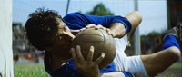Hay pocas cosas más tontas que fallar un penalti. No se lleven a engaño. En un deporte donde se han marcado goles de chilena, desde el mediocampo, de falta directa a treinta metros y por la escuadra, para jugadores que han logrado anotar con el pecho, de rabona, en semicaída, con escorzos imposibles; eso de alojar la pelota desde los once metros sin más obstáculo que un minúsculo portero bajo no debería suponer ningún esfuerzo. Sin embargo sólo hay que echar un vistazo a nuestra historia futbolística para ver el disparate en forma de lanzamiento blando, artificio cómico, panenkada, ensayo rugbítico, que da por finalizada la esperanza. Olvídense de los méritos del portero, no aplaudan sus estiradas, si un guardameta para el balón es porque el lanzador lo ha hecho rematadamente mal. El penalti vulgariza a los grandes jugadores. Hasta los mejores aflojan los calzones cuando, en medio de la nada, el portero fija la mirada en el balón y reta al lanzador. Yo creo que los penaltis deberían desaparecer de este deporte, el motivo es obvio y no tiene nada que ver con la injusticia, la pena máxima -como su propio nombre indica- es un lance demasiado fácil para el juego.
Redención
Thu, 24 Nov 2011 17:31:16 +0000
Recibo el balón pegado a la línea, como a mí me gusta. Acomodo la pelota con el pie izquierdo, delicado, privando a la línea de banda del placer de besar el cuero. Sobre mí, cincuenta mil pares de ojos se clavan en mis botas. Hay un murmullo constante, pero no lo escucho. Sólo escucho lo [...]
Recibo el balón pegado a la línea, como a mí me gusta. Acomodo la pelota con el pie izquierdo, delicado, privando a la línea de banda del placer de besar el cuero. Sobre mí, cincuenta mil pares de ojos se clavan en mis botas. Hay un murmullo constante, pero no lo escucho. Sólo escucho lo que quiero. Los latidos de mi corazón acelerándose, el deslizar de la pelota sobre el césped, el golpe seco del interior de mi bota en el control, los pasos del lateral que me acecha, … No quiero mirar hacia adelante. No estoy para nadie. Lo voy a intentar. Una vez más. Ésta sí, va a ser la buena. Acompaño mi arrancada con una serie de movimientos antinaturalmente interrumpidos, casi espasmódicos. El engaño. Sé que esta vez me va a salir. Amago. Hacia dentro, hacia fuera de nuevo. Concentrado en mi ejercicio no sé ni lo que tengo a mi alrededor. Ya está, he agotado la maniobra, es el momento del cambio de ritmo, de dejar atrás a mi marcador, de exprimir mi punta de velocidad. Lo intento. Me voy, disparado hacia la línea de fondo, confiado. Siento que levito. Lo único que veo es el balón, cosido a mi bota, y al fondo una línea blanca, amenazante, que se acerca cada vez más rápido. Se me acaba el tiempo, se me agota el espacio. Siento la respiración del defensor en mi cogote, no he conseguido engañarle. Está encima de mí. Ahora sí que puedo oírlo todo. Escucho el murmullo ronco de la grada. Percibo incluso algún silbido de reproche. También me llegan las voces irritadas de un compañero, indicándome lo inmejorable de su posición. Me voy al suelo. Derrotado. He perdido una vez más.
Por extraño que parezca, Diego Capel solo tiene 23 años. Sin embargo, parece que lleve toda una vida intentando una jugada imperfecta. Cuatro temporadas en la primera plantilla del Sevilla FC, en las que su imagen se fue transformando de prometedora estrella a caricatura de un extremo, fueron suficientes. El chico había llegado a un punto de intrascendencia e improductividad que amenazaba seriamente su antaño prometedora carrera futbolística. Con un único registro en su catálogo interpretativo, la exigencia era máxima. Si ese registro único no funcionaba, el menudo extremo almeriense se diluía, haciendo de su banda izquierda un territorio yermo, baldío. Y, por los motivos que fueran, pese a contar con unas dotes inmejorables para la interpretación del papel, el registro no funcionaba. Capel se había convertido, tras apenas cuatro años como profesional, en un futbolista innecesario.
El empujón que necesitaba su trayectoria para salir de las aguas pantanosas en las que parecía haberse encallado llegó el pasado verano. Y vino de Portugal. Cansado de recoger las migajas que iban dejando por el camino Porto y Benfica, el Sporting Clube de Portugal se dispuso a renovar una plantilla que ya no daba más de sí. Llegaron al Alvalade futbolistas como Ricky van Wolfswinkel, Stijn Schaars, Valeri Bojinov, Oguchi Onyewu o Jeffren. Y, entre todos ellos, un aún jovencísimo Capel en busca de redención.
Con el nuevo capítulo abierto, al almeriense no pareció lastrarle el peso de la página en blanco. Decidió reinventarse, empezar de cero. Y fue valiente al hacerlo donde lo hizo. Triunfar como extremo en un club en el que han sentado cátedra miembros de la legendaria estirpe de los hombres de la cal como Paulo Futre, Luis Figo, Ricardo Quaresma, Simão o el propio Cristiano Ronaldo exigía un esfuerzo extra. La sombra de la Academia de Alcochete era alargada, pero el fútbol tuvo a bien devolverle a Capel la sonrisa que le había robado. Asentado como titular en la banda izquierda sportinguista, el veloz extremo andaluz acaba de ser elegido por la asociación de futbolistas portugueses como el mejor futbolista del mes de octubre en la Liga ZON Sagres, tras anotar tres goles en tres partidos. Ahora ve el fútbol de otra manera. Su registro vuelve a ser efectivo y cada vez más perfecto. Ha encontrado el lugar ideal para desarrollar sus condiciones naturales en un fútbol alegre, quizá incluso algo anárquico, como el portugués. En una tierra de extremos, de gente como él. Gente a la que la grada comprende lo complejo y exquisito de su trabajo.
No es Ibra, es el Milan
Wed, 23 Nov 2011 14:47:41 +0000
Horas antes de la disputa del duelo que decidirá la primera plaza del Grupo H de la Liga de Campeones, reina la omertà entre AC Milan y FC Barcelona. Se pretende que el partido se dispute por la vía del juego, la que mejor domina el Barça, y no por la del entorno influyente y [...]
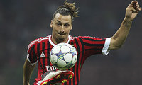
Horas antes de la disputa del duelo que decidirá la primera plaza del Grupo H de la Liga de Campeones, reina la omertà entre AC Milan y FC Barcelona. Se pretende que el partido se dispute por la vía del juego, la que mejor domina el Barça, y no por la del entorno influyente y desequilibrante. Con todo, y pese a la prudencia exhibida desde ambos bandos, parece imposible no dirigir las miradas hacia Zlatan Ibrahimović. El punta sueco, lenguaraz y desatinado como pocos tras su tumultuosa salida de Can Barça en el verano de 2010, ha venido acaparando portadas y titulares desde que abandonase el proyecto de Guardiola, especialmente tras la reciente publicación de su autobiografía. Su fijación con un club en el que apenas permaneció una temporada parece radicar en la mixtura de una desproporcionada autoestima con una más que probable sensación de fracaso personal. No haber sido capaz de adaptar su carácter y sus condiciones al mejor equipo del momento y no haber logrado congeniar con el principal artífice del ingenio azulgrana pesa como un saco sobre la estima del delantero de origen balcánico. Barcelona fue, sin dudarlo, un paso en falso en su exitosa carrera.
Cada semana, y de la mano de bwin.com, os ofreceremos los partidos más interesantes del fútbol mundial, con especial atención a todos aquellos que os manejáis en el mundo de las apuestas on-line.
Pero la insistencia de Zlatan por rescatar lo malo de su pasado culé no ha pillado descubierta a la plantilla barcelonista. Siempre con el paraguas a mano, dispuesto a aislar a sus futbolistas y protegerlos de injerencias insidiosas, a Pep Guardiola le ha bastado con quitar importancia al capítulo Ibrahimović. Además, el desgraciado asunto de la operación urgente de Tito Vilanova ha engullido por sí solo cualquier intento de centrar el duelo en la figura del sueco.
Sin Iniesta, baja por precaución en la noche de San Siro, y sin Dani Alves, sancionado por acumulación de tarjetas, al Barça buscará un triunfo que le garantizará la primera posición del grupo. No es San Siro un estadio con malos recuerdos para el barcelonismo. En la que fue su última visita al feudo milanista, en abril de 2006, consiguió una victoria (0-1, con gol de Giuly) que serviría como salvoconducto a la final de París. Un empate (en 2001) y una derrota (en 2004) jalonan la trayectoria azulgrana en su visita a los rossoneri en la última década.
Si el Barça tiene su plus de motivación en la recuperación de Vilanova, en el Milan miran de reojo hacia el corazón de Cassano, tras la operación de urgencia a la que fue sometido el delantero de Bari el pasado 4 de noviembre. Igualados pues en lo emotivo, el tercer clasificado de la Serie A debe aferrarse al 2-2 cosechado en el Camp Nou hace un par de meses. Allegri volverá a intentar revolucionar el ataque de los suyos con la presencia en el once de Pato, un especialista en buscar espaldas de defensas adelantadas y descerrajarlas a la carrera, como ya demostrara en el partido disputado en Barcelona. Por si el Valium no le hiciera finalmente efecto a Ibra.
Apuesten por el gol de Ibra. Ha marcado en los tres partidos de Liga de Campeones disputados esta temporada (se perdió el del Camp Nou) y es un futbolista que acostumbra a sobredimensionarse cuando los focos se fijan en él. Las cuotas de apuestas en bwin van desde los 3.00 euros por euro apostado en el caso de que el sueco marcara un tanto (¡idéntica cuota pagada por un hipotético gol de Isaac Cuenca!) hasta los 13.50 si el milanista anotase dos o más goles. En cualquier caso, y como en el duelo del año 2006, no parece que vaya a ser un partido con muchos goles. El Barça viene alertado por el empate arrancado por los de Allegri en Barcelona y el Milan no contempla la opción de lanzarse a pecho descubierto sobre los azulgranas. El Under 2.5 nos daría 2.05 euros por euro apostado.
Lo nunca visto, en Wigan
Tue, 22 Nov 2011 14:18:07 +0000
Una de las razones que se proponen habitualmente para justificar el éxito del fútbol a nivel planetario es su naturaleza discreta; no en el sentido de silenciosa, que no lo es, sino significando que en cada partido se producen un puñado de picos de enorme interés –goles, ocasiones, etc-, más bien escasos, que concentran lo [...]
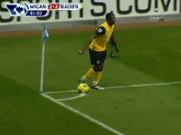
Una de las razones que se proponen habitualmente para justificar el éxito del fútbol a nivel planetario es su naturaleza discreta; no en el sentido de silenciosa, que no lo es, sino significando que en cada partido se producen un puñado de picos de enorme interés –goles, ocasiones, etc-, más bien escasos, que concentran lo que acaba confiriéndole su individualidad. Esta característica permite que el fútbol sea fácilmente empaquetable en resúmenes, y también la aparición cada poco tiempo de circunstancias llamativas, positivas, negativas o simplemente exóticas, que el espectador no olvida y por tanto dotan al partido en el que suceden de un halo de inmortalidad. No exageramos al afirmar que en muchas ocasiones, la esperanza secreta de que aparezca el evento en cuestión nos anima a presenciar partido tras partido, aunque no sintamos vinculación afectiva alguna con los contendientes y el juego que estemos contemplando no esté resultando brillante. Sabemos que es fútbol, y que en cualquier momento puede saltar la liebre.
El sábado la perla apareció en el DW Stadium, y quizá como recompensa a los que mantenemos esa casi infantil mezcla de expectación y curiosidad, por partida doble. No hablaremos demasiado del partido, aunque los futbolistas de Wigan y Blackburn merecen que se recuerde el espléndido 3-3, la agonía vivida sobre el césped hasta el último segundo, dos goles españoles, y cómo quizá este punto sea fundamental para alejarlos a final de temporada del infierno de la Championship.
Nos fijaremos en cambio en dos lances que al menos el arriba firmante jamás había presenciado en un campo de fútbol. Con 2-1 en el marcador, David Hoilett deposita el balón con la mano en la media luna del córner, y un momento después llega Pedersen para, ante la incredulidad general, salir jugando tranquilamente el balón. No centrándolo, pasándolo o intentando el gol olímpico, no, no, nada de eso. El amigo penetra paralelo a la línea de meta, cuando le apetece mete el centro raso, el portero Al-Habsi –que estaría esperando a despertar- se la traga, y empate a dos. Increíble. Ni expulsiones, ni penaltis, ni goles anulados, ni fueras de juego; el de Mr. Marriner es uno de los errores técnicos más llamativos y graves jamás vistos en un árbitro profesional. Parecido en apariencia a truquitos como el de Recoba y Estoyanoff, muy diferente en realidad.
El partido sigue adelante, llega el descuento, el resultado es apretado y, como ocurre cada vez con más frecuencia, el portero sube a rematar: se trata de Paul Robinson, con esa ilusión en la cabeza que muy escasos cancerberos –inolvidable Palop, frustrado Songo’o- han visto colmada. Pero aunque sea una vez al año eso ya se ve de cuando en cuando, y ha quedado dicho que esta noche es absolutamente especial. Así que cuando su equipo saca el córner y el balón vuela, el pobre Robinson recibe una patada de Kung-Fu que firmaría un Charlie Chan en plena forma. Luego cayó el empate, pero levanten el dedo o pónganlo en comentarios si antes vieron a un portero recibir un penalty. Uno de esos días en los que el fútbol entra en el dominio de lo bizarro, lo surrealista o lo kafkiano. Ver para creer.
Vídeo del partido
DDF | Los cinco momentos de Paul Robinson
Santander encuentra su esperanza
Mon, 21 Nov 2011 19:41:40 +0000
‘Líder en chorizo‘. La frase se puede leer sobre la camiseta del Real Racing Club de Santander, a escasos centímetros de su casi centenario escudo. Es el emblema del patrocinador principal del equipo, una conocida firma charcutera. Tiene su punto de ironía del destino, no crean. En apenas diez meses, los acontecimientos han ido precipitándose [...]
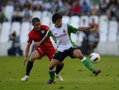
‘Líder en chorizo‘. La frase se puede leer sobre la camiseta del Real Racing Club de Santander, a escasos centímetros de su casi centenario escudo. Es el emblema del patrocinador principal del equipo, una conocida firma charcutera. Tiene su punto de ironía del destino, no crean. En apenas diez meses, los acontecimientos han ido precipitándose en la capital cántabra. Todo comenzó con la llegada a El Sardinero de Ali Syed. El empresario indio aterrizó en Parayas aprovechando un momento idóneo: las deudas asfixiaban al club y los resultados deportivos, mediada la temporada pasada, eran amenazantes. Ante semejante panorama, poca gente reparó en la idoneidad de la aparición del siniestro personaje. Prometió saneamiento económico progresivo y una plantilla para soñar y lo único que dejó fue una cantidad insensata de impagos acumulados y un patético espectáculo en el palco santanderino. ¿Lo único? Puede que en realidad, y por desgracia, me equivoque: realmente, no se conoce aún el alcance real del paso de Mister Ali por la entidad montañesa. Y digo que no se conoce porque su figura aún sigue presente. Syed continua siendo propietario del club, pese a que se haya en paradero desconocido desde hace varios meses. La situación es caótica a nivel institucional. Con la reciente dimisión del Consejo de Administración en pleno (dimisión sin efectos reales, puesto que ‘no hay nadie’ ante quien dimitir), el futuro del club, acogido además a la Ley Concursal, es oscuro.
Como es lógico, la situación institucional se está haciendo notar en el plano deportivo. Tras la tumultosa salida de Marcelino García Toral el pasado verano, se buscó, con la llegada de Héctor Cúper, el aporte de un técnico experto en hacer florecer vergeles en mitad de un desierto. No había lugar para las contemplaciones. Al Racing solo le iban a valer los puntos obtenidos, sin importar las vías. Y, para eso, la opción del argentino era probablemente de las mejores. Sin embargo, los tres primeros meses de competición han dejado claro que el equipo va a pasar penurias deportivas. Hacer un gol cuesta un mundo (apenas siete tantos en once partidos, segundo equipo menos goleador de la tabla) y en el casillero de victorias languidece un único triunfo racinguista (en la jornada 11ª, ante el Betis).
La grada mira con pesar hacia el césped. A Munitis y a Colsa, antiguos emblemas, les pesan los kilómetros acumulados en sus botas. Keneddy ya no parece ser el jugador regular y destacado de la pasada campaña. A Nahuelpán, es una evidencia, no se le puede responsabilizar de las tareas goleadoras. El panorama es desolador. O lo era hasta la frenética irrupción de Jairo Samperio (Cabezón de la Sal, 1993).
Ocurrió en el trabajado empate a cero ante el Real Madrid. Jairo, en quien había confiado ese día Cúper para formar parte del once en sustitución de Munitis, se llevó a Marcelo hasta la línea de banda. Pisó el balón y, ante la impetuosa entrada del defensor madridista, quebró a la derecha con elegancia. Un quiebro seco, eléctrico, que dejó al brasileño tendido en el césped, incapaz de reaccionar ante la maniobra del joven canterano racinguista. De Jairo se ha destacado su descaro y su arrojo en el campo. Lo habitual en un joven al que su técnico ve oportuno hacer debutar en Primera a la temprana edad de dieciocho años. Pero al prometedor centrocampista le ha tocado vivir una época complicada. Su papel, aventuro, va a ir mucho más allá del puramente deportivo. Joven, prometedor, cántabro y ligado al club desde categoría infantil. Lo tiene todo para ser el salvavidas de una afición a la deriva.
Los cinco momentos de Paul Robinson
Sun, 20 Nov 2011 21:30:02 +0000
Categoría: English football goalkeepers. Atributos: problemáticos, alocados y fallones. No se sabe muy bien con quién empezó la mala fama de los arqueros ingleses, tantos años capitaneados por David Seaman en los noventa. Posiblemente el guardameta de bigote fino y coleta pronunciada fuera el primer socio del club en su ocaso como futbolista. Recuerden el [...]
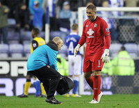Categoría: English football goalkeepers.
Atributos: problemáticos, alocados y fallones.
No se sabe muy bien con quién empezó la mala fama de los arqueros ingleses, tantos años capitaneados por David Seaman en los noventa. Posiblemente el guardameta de bigote fino y coleta pronunciada fuera el primer socio del club en su ocaso como futbolista. Recuerden el gol de Ronaldinho en el Mundial de Corea y Japón. Pero si hay algún miembro que sobresalga en este grupo de honor dudoso -y no sólo por su constitución- es el meta de Beverley Paul Robinson. Tan ágil en sus estiradas como torpe en las acciones sencillas. Cabeza rapada y barriga prominente. Ha defendido las redes de Leeds United, Tottenham Hotspurs y ahora Blackburn Rovers. A continuación le homenajeamos repasando sus cinco tardes de gloria. La última ayer mismo.
1.- Leeds United – Swindon Town, 24 de septiembre de 2003. Un joven Paul Robinson, de tan sólo 25 años, iría a buscar el balón dentro de la portería 77 veces esa temporada, la del descenso del Leeds a la segunda división. Sin embargo, su año tuvo un momento álgido. Minuto 90. Elland Road. Segunda ronda de la Carling Cup. El Leeds busca el empate a la desesperada. Robinson ha subido a rematar un saque de esquina. Quiere hacer valer sus 193 centímetros. Los movimientos son los adecuados, finta hacia fuera y luego corre al primer poste. El defensa le sigue, el centro va hacia su dirección, Robinson se anticipa y de remate cruzado consigue el gol de su vida. Un tanto que forzaría la tanda de penaltis, donde paró uno y el Leeds pasó ronda.
2.- Croacia 2 – 0 Inglaterra, 11 de octubre de 2006. El combinado de Steve McClaren perdía por uno a cero y no daba sensación de poder empatar en ningún momento. Gary Neville dejó que el balón botara hacia el interior de su área y, ante la presión de un delantero croata, lo cedió hacia Robinson. El campo estaba en mal estado y el esférico iba dando pequeños botecitos. El portero lo quiso golpear con tanta fuerza que cuando puso el pie chutó a la nada. Robinson, que vestía de amarillo, no tuvo donde esconderse. Inglaterra no se clasificaría para la Eurocopa de 2008.
3.-Tottenham – Watford, 17 de marzo de 2007. El segundo gol de su vida, tres años después. Minuto 61 de partido en White Hart Lane y el bueno de Robinson se dispone a mostrar su tremendo golpeo. Servirá una falta desde su propio campo. Unos diez metros fuera de su área, escorado a la zona izquierda. El balón bota en el punto de penalti. Es regalarlo, no hay ningún compañero tan avanzado. El esférico va tan bombeado que pega un bote imponente, sorprende a Ben Foster, le supera por arriba y se convierte en gol. Unas semanas después Foster y Robinson, dos miembros selectos de la english football goalkeepers, fueron convocados por el combinado nacional. Vivir juntos, entrenar juntos. Robinson nunca le mencionó la jugada.
4. Tottenham 2 – 1 Chelsea, 24 de febrero de 2008. Robinson fue 41 veces internacional desde 2003 a 2007. Pese algún fallo tremendo que hemos repasado, no es un guardameta tan terrorífico. Sólo tiene un título en sus vitrinas, la Carling Cup de 2008, conseguida en Wembley frente al Chelsea. Erró en la colocación de la barrera en el gol del Chelsea, anotado por Didier Drogba, pero esa fue su gran tarde. Poco trabajo y levantar el único título de su carrera.
5.-Wigan 3 – 3 Blackburn Rovers, 19 de noviembre de 2011. Ante la negativa del club a permitir pancartas en el estadio, en el último partido algún aficionado adinerado del Blackburn se lució contractando una avioneta que sobrevoló Ewood Park con una pancarta en contra del entrenador, Steve Kean. Ayer, en Wigan, los Rovers volvían a perder. 3 a 2. Minuto 99 de encuentro. Más no se podía añadir. Dramático. Balón parado. Paul Robinson recuerda sus movimientos en el área ante el Swindon. No se lo piensa y sube a rematar. El balón va hacia él, intenta controlarlo, podrá disparar… y un defensor del Wigan le propina una patada en la cabeza. Es penalti. Robinson se levanta y, mientras sangra, observa el desenlace. El nigeriano Yakubu convierte la pena máxima y empata el partido. Así celebró Paul Robinson su partido número 350 en la Premier League.
Fotografía | Wigan Athletic
Grandes Valencia-Madrid
Sun, 20 Nov 2011 00:14:41 +0000
Sin llegar a la frecuencia de los enfrentamientos del Valencia con el Barça, las visitas del Madrid a Mestalla han dejado en los últimos años unos cuantos partidazos para recordar. Así que hagamos eso precisamente, recordémoslos. Temporada 1995-96, 4-3. Llegaba el Madrid como campeón, el Valencia construía un equipazo que peleó la Liga hasta el [...]
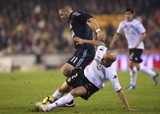
Sin llegar a la frecuencia de los enfrentamientos del Valencia con el Barça, las visitas del Madrid a Mestalla han dejado en los últimos años unos cuantos partidazos para recordar. Así que hagamos eso precisamente, recordémoslos.
Temporada 1995-96, 4-3. Llegaba el Madrid como campeón, el Valencia construía un equipazo que peleó la Liga hasta el último suspiro. Los chés aplastaron en el primer tiempo a un rival que comenzaba ya a meterse en el túnel, y en particular marcó un tal Mijatovic que unos meses después iba a provocar una fractura entre ambos clubes cuyo efecto persiste quince años después. Los merengues tiraron de orgullo en la segunda y llevaron el marcador al 3-2, pero Arroyo, clásico revulsivo, puso el último clavo en la tumba. Partido polémico e intenso, jugado bajo la lluvia, que marcó la temporada de ambos clubes.
Temporada 1998-99, 6-0. Un Valencia desbocado en busca del título de Copa hizo trizas al Madrid en una noche imposible de olvidar, por cuanto que es la mayor goleada encajada por los madrileños en partido oficial en muchísimos años. Toshack sacó una defensa de broma con Dorado, Jaime, e Iván Campo, y y la expulsión de Redondo hizo el resto. Los chés ya se marcharon con 4-0 al descanso –doblete incluido de Roche- y los dos goles finales de Mendieta y el Piojo llenaron la grada de Mestalla del grito burlesco: “Sois San Marino”.
Temporada 2007-08, 1-5. Esta paliza a domicilio del Real Madrid marcó el comienzo de una serie de grandes Valencia-Madrid, que esperemos prosiga esta noche. Una de las mejores versiones del equipo de Schuster, que acabaría llevándose la Liga, se llevó por delante a un Valencia convulso y decadente, inmerso en una temporada delirante que incluyó barbaridades de Koeman y también la Copa del Rey. El partido se resume en un apabullante primer tiempo de los blancos, que ya habían marcado en el primer minuto de juego y que llegaban al descanso 0-4. Muy destacable el golazo de Sergio Ramos, llamativo en un lateral.
Temporada 2008-09, 3-0. El Madrid que acudió a Mestalla en el verano del 2009 era un grupo destruido, machacado por meses de persecución, y abandonada la épica del resistente tras el 2-6 del Barça en el Bernabéu. El mítico trío de avispas Mata-Silva-Villa aprovechó la coyuntura que se le servía en bandeja, y acabó abusando con un juego preciso y alegre, incontestable para los de negro. El fantasma de la humillación sobrevoló durante muchos minutos el coliseo valencianista, inexistente el Madrid después de que sus dos ocasiones iniciales se fueran al limbo. Maravilloso el tanto de Baraja, canto del cisne.
Temporada 2009-10, 2-3. La última gran batalla igualada que han dirimido estos dos colosos llegó hace dos años casi justos. Una maravilla de intensidad que le costó los ligamentos a Pepe, que mostró el caràcter del equipo valenciano, capaz de empatar dos veces, y que sirve como prueba de que Higuaín y Benzema pueden rendir juntos. También uno de los peores partidos que se le recuerdan a Iker Casillas, muy blando tanto para cerrar a Villa como en el tiro de Joaquín.
Temporada 2010-11, 3-6. Y así llegamos al pasado inmediato, un partido que puede servir para entender por qué Emery, a pesar de sus indudables méritos, sigue siendo contestado en Mestalla con cierta frecuencia. No puede ser que un equipo que se juega la entrada en la Champions –objetivo de la temporada- salga con los brazos caídos ante otro con la Liga perdida y sin motivación conocida. Los suplentes de Mourinho crucificaron al Valencia, especialmente en un primer tiempo espléndido, y sólo un arreón final comandado por Juan Mata maquilló algo un resultado muy doloroso. El precedente estará muy presente esta noche cuando ruede el balón. A partir de las 22, en la Sexta.
Callejón: Este Madrid divierte mucho a la gente
Sat, 19 Nov 2011 05:37:17 +0000
El delantero blanco ha hablado de la decimotercera jornada de Liga en la que se enfrentará al Valencia, así como del partido del Atlético de Madrid- Levante y del Sevilla-Athletic de Bilbao en una entrevista exclusiva para la plataforma de juego online bwin.com. De cara a esta decimotercera jornada de Liga, el Madrid se encuentra [...]
El delantero blanco ha hablado de la decimotercera jornada de Liga en la que se enfrentará al Valencia, así como del partido del Atlético de Madrid- Levante y del Sevilla-Athletic de Bilbao en una entrevista exclusiva para la plataforma de juego online bwin.com.
De cara a esta decimotercera jornada de Liga, el Madrid se encuentra muy fuerte como líder de la clasificación, pero el Barcelona le pisa los talones a tres puntos de diferencia, junto con el Valencia, a cuatro. Por eso el partido del sábado será clave de cara a mantener el liderato.
El Madrid tiene la defensa más goleadora de la Liga y como admite Jose Callejón es un equipo solidario: “Trabajamos todos para el bien común”. Además, están muy agradecidos a su afición: “Tenemos que dar gracias al público del Bernabéu porque en cada partido llena el estadio y lo que queremos nosotros es eso, jugar bien para que ellos se diviertan. El objetivo prioritario es ganar siempre”.
Callejón ha vuelto al Madrid tras salir del Castilla como pichichi de la temporada 2007-08 para aportar “humildad, compañerismo y solidaridad”. “Está claro que con este equipo están los mejores del mundo y son una familia. Todos estamos unidos, estamos trabajando muy bien y mucho”, asevera.
Tras estrenarse en la Liga marcándole un gol a sus excompañeros del Espanyol, está deseando marcar un gol en casa: “Quiero hacerlo cuanto antes para ganarme al público del Bernabéu y también para estar contento conmigo mismo y con los compañeros”, apunta.
Si Callejón tuviera que elegir a uno de sus compañeros para darle el Balón de Oro lo tendría difícil: “Para mí los veinticuatro que hay en la plantilla son los mejores del mundo y por eso están aquí. En este Club siempre han estado los mejores y siempre lo van a estar. Se lo daría a los veinticuatro. A lo mejor no me lo daría a mí, pero a los veintitrés restantes, sí”, comenta sonriendo.
De cara al partido contra el Valencia, tiene muy presente que es un rival importante: “En casa siempre están muy fuertes. Soldado y Jordi Alba están en un momento muy bueno de forma. Roberto está haciendo muchos goles y está muy bien”. Y tiene claro lo que se requiere para frenarlo: “Tenemos que estar pendientes de todo. En su casa juegan muy bien, siempre aprietan mucho. Nos complican el juego, pero está claro que somos el Madrid y que vamos a todos los campos a ganar porque es el objetivo”.
Además de para mantener su liderato, otro de los motivos por los que el Club blanco tiene que ir a por todas es para intentar ganar en un Estadio aún invicto esta temporada. Callejón confía en su equipo y en el Club: “Creo que este escudo que llevamos en la camiseta supone eso siempre cuando salimos a cada partido o a cada campo. Salir a ganar, eso es lo que tiene este escudo”.
Respecto a las posibilidades de su equipo para ganar la Liga este año, Callejón se muestra optimista: “Esperemos que sí. Estamos luchando para conseguir ese objetivo. Está claro que todavía es muy pronto para decirlo y que quedan muchos partidos, pero estamos muy ilusionados y esperemos que sea así”.
Atlético de Madrid-Levante
El Levante le saca diez puntos al Atlético y parte como claro favorito, pero Callejón se muestra bastante cauto en su opinión: “Está claro que el Atleti en casa siempre suele jugar bastante bien, suele hacer buen fútbol y el Levante este año está muy bien, está jugando muy bien y por eso está ahí donde está”, apunta.
Sevilla-Athletic de Bilbao
Respecto al partido entre los dos equipos que esta temporada estrenan entrenador comenta: “El entrenador rival ha dado un cambio al equipo, un poco más de confianza y el Sevilla está claro que todos los años está ahí arriba y siempre hace buen fútbol, tanto dentro como fuera de casa”. Y concluye: “Será un partido muy bonito y donde supongo que habrá muchas ocasiones y que al final ganará el que se lo merezca”.
Situación de las cuotas de estos partidos en bwin.com (cuotas susceptibles de cambio)
Valencia 6.50 X 4.40 Real Madrid 1.45
Atlético de Madrid 1.55 X 3.90 Levante 6.00
Sevilla 1.91 X 3.40 Athletic de Bilbao 4.00
Real Madrid: el caos armónico
Fri, 18 Nov 2011 17:32:49 +0000
Me gusta escribir del Madrid porque diga lo que diga voy a resultar tendencioso. Es tal el estado de paranoia en torno al equipo blanco que todo lo dicho sobre el club es juzgado, catalogado y puesto en cuestión por la afición y la contra-afición. Cierto que las intrigas palaciegas aburren, que hay personajes siniestros [...]
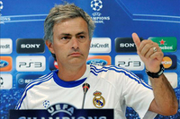
Me gusta escribir del Madrid porque diga lo que diga voy a resultar tendencioso. Es tal el estado de paranoia en torno al equipo blanco que todo lo dicho sobre el club es juzgado, catalogado y puesto en cuestión por la afición y la contra-afición. Cierto que las intrigas palaciegas aburren, que hay personajes siniestros y una leve demonización de los dirigentes y técnicos; pero más allá de toda esta pátina a lo Borgia, el Madrid es un equipo de fútbol y, en esta temporada, del bueno. La figura de Mourinho como entrenador está ensombrecida por la figura de Mourinho como orador. Su prepotencia, altanería y cinismo desconciertan a los aficionados y cabrea a los contra-aficionados. Como estratega es de los buenos, sus equipos apuestan por un fútbol moderno, equilibrado, ofensivo en las grandes ocasiones y cicatero en los partidos difíciles. Es un ganador en el sentido estricto de la palabra: deja poco espacio al espectáculo si este puede perturbar una victoria. Pragmatismo podemos llamarlo o simplemente conservadurismo. Todo depende de vuestro gusto balompédico, del disfrute de cada uno. Yo soy un hombre vulgar y a mí lo que me gusta es celebrar los títulos. Los hay maquiavélicos y los hay kavafianos, los hay que sólo miran el resultado y los hay que disfrutan del itinerario para conseguirlos. Yo soy de los primeros pero puedo disfrutar como lo hacen los segundos. Hablando claro: lo del Barça haría estremecerse al poeta griego y lo de Mourinho levantaría del sillón al pensador florentino.
El equipo, volviendo al fútbol, funciona. Y lo hace básicamente por el mantenimiento del bloque del año pasado, un proyecto larvario, con más sombra que luz, pero punto de partida para entender la eficacia de estos meses. Si entendemos este deporte como la conjunción de cuatro líneas –portero, defensa, centro del campo y delantera- el equipo de Mourinho es ejemplar. Sus equipos, desde aquel Oporto al Inter campeón de Europa, tienden a la mezcla de posiciones como garantía de una defensa solidaria y un ataque sorpresivo. Los jugadores pivote pierden peso frente a los todocampistas –memorable Lampard, impactante el Eto´o carrilero o el Coentrao inclasificable en estos primeros partidos-, donde el todo es superior a la suma de las partes, que digo poniéndome gestáltico. El otro modelo, el del brillante Barcelona de Guardiola, tiene una visión más estática del fútbol. Lo que corre es el balón, como diría el filósofo holandés, y los jugadores mantienen la posición con disciplina soviética mientras que el contrario corre detrás de la odiosa esfera de cuero. El Madrid apuesta por la estampida, el desborde y el cuerpo a cuerpo. Su fútbol es más farragoso y menos estético pero igualmente eficaz. En esta temporada hemos visto un Madrid intratable en ese treinta por ciento de campo que no es de nadie, esa zona neutral que es el centro del terreno de juego, allí donde arrancan por igual los contraataques y las defensas. La figura de Xabi Alonso se ha agrandado rodeado de jugadores eléctricos, maleables, asociativos y es, de alguna manera, el único elemento estático. Como el eje en torno al cual revolucionan los compañeros, la referencia para ese caos ordenado que plantea el técnico portugués.
Cuando el viento va de cara las cosas funcionan solas. Kaká, por ejemplo, ha pasado de ser poco más que un bulto sospechoso en el banquillo del Bernabéu a ejercer el rol de jugador exquisito que en su día lo llevó al estrellato. Como diría Rodax “ni antes era tan bueno ni ahora soy tan malo”, pero su mejora es una buena noticia para los blancos. El centro de la defensa funciona y da garantías con Pepe, ese brillante desequilibrado que para mí se ha convertido en el mejor central que ha tenido el equipo de Chamartín desde que Hierro colgó las botas, y la que unánimemente se defiende como la mejor posición para Ramos. Y con dos laterales, Arbeloa y Marcelo, que están sacando petróleo de unas bandas demasiado acostumbradas al pasillo corto. Lo de Alonso, como decía, es sobresaliente, y mucha culpa la tiene su conexión con Coentrao, Di María u Özil. El caso del alemán, por cierto, es el más alarmante en lo que va de temporada. Ha ido perdiendo peso en el equipo, el año pasado con un equipo más bisoño logró destacar precisamente por alumbrar el desorden ofensivo de una plantilla con tendencia al descontrol. Este año, con el equipo mejor plantado, su rol debería ser el de canalizar y ocupar más espacio del que ocupa. En mi opinión es un jugador blando, poco acostumbrado al rifirrafe en la zona templada, como un artista de cristal con la fuerza justa para poner el balón en el sitio justo. Nada que ver con el centrocampista que gusta a Mourinho, un perfil como Di Maria –más impreciso pero más correoso y valiente- o Callejón –con mucho menos fútbol pero más sacrificado y luchador que el ex del Werder-. Entrará en juego seguro, pero si Sahin termina con entrar en el once y apuntalar el medio del campo junto a Alonso, el perfil de boya ofensiva de Özil debería perder fuerza a favor de jugadores con más desborde y vocación de banda.
Arriba la competencia entre Benzema e Higuaín está haciendo crecer a ambos. Soy muy escéptico en cuanto al argentino. Yo, podéis abuchearme, lo hubiera vendido en verano. Creo que había jugadores con más calidad que él en el mercado. Siempre que veo al Kun pienso en lo bien que le hubiera quedado el blanco. Como escribí una vez por aquí, el Pipita me parece un delantero destemplado. Marca goles, sí, pero le cuesta fabricarlos. El equipo trabaja para él y un equipo grande necesita más soluciones que exigencias. Podéis seguir abucheándome. Benzema es otra cosa. Empezó mal, incuestionable, pero es un delantero total. La comparación con Ronaldo, el de toda la vida, no es gratuito. Ambos son jugadores autárquicos, independientes, que viven ajenos al desarrollo del juego, infranqueables, que no olvidan su cometido en los noventa minutos: marcar. Además el francés se ha destapado como un buen asistente, un complemento más de su completo perfil atacante. Por otra parte lo de Cristiano Ronaldo sigue siendo monumental. Crea peligro constantemente, no se obceca como antes, despeja el juego ofensivo, juega a banda y al interior, remata cuando debe rematar y baja a defender cuando tiene que hacerlo. Crea juego, lo destruye, no pierde la portería de vista pero tampoco a sus compañeros. Un jugador que, de no ser por la existencia de ese astro llamado Messi, sería el rey absoluto de este deporte universal.
Queda mucha Liga, muchísima Copa y una Champions aún insondable. Pero el Madrid tiene equipo para pelear por las tres. El Barcelona no anda fino, su palidez resalta el buen color del equipo de Mourinho. Todo son rachas. Los de Guardiola andan cortos de efectivos y se nota, pronto crecerán en cuanto las lesiones dejen de hacer mella en su lustrosa plantilla. Será entonces cuando se podrá medir el potencial de ambos. Este fin de semana los merengues tienen un partido difícil contra el regular Valencia. Un equipo, el de Emery, siempre luchador y puntualmente brillante. A la sombra de los dos “grandes” pero con entidad suficiente para poner en peligros a cualquiera. El parón de las selecciones ha creado hambre de liga doméstica. El Madrid, con su fútbol directo, con su deconstrucción armónica, merece esa expectación tras años de extravío. Aficionados y contra-aficionados deberían coincidir en que nuestro fútbol necesitaba una alternativa sólida al festín de títulos y fútbol del ya inolvidable ciclo blaugrana.
¿Virus FIFA?
Thu, 17 Nov 2011 19:46:42 +0000
Es el tema recurrente después de cada semana de partidos de selecciones nacionales. Como queriendo alertar de su alto peligro, de su carácter pernicioso o de su insalubridad, a la prensa afín a los grandes de España no se le ha venido al teclado mejor denominación que la de ‘virus’. Los partidos de selecciones son [...]
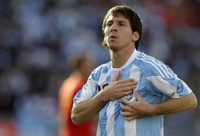Es el tema recurrente después de cada semana de partidos de selecciones nacionales. Como queriendo alertar de su alto peligro, de su carácter pernicioso o de su insalubridad, a la prensa afín a los grandes de España no se le ha venido al teclado mejor denominación que la de ‘virus’. Los partidos de selecciones son a los clubes lo que ese microscópico organismo a las células que conforman el cuerpo humano. Aprovechándose de su metabolismo, valiéndose de la estructura que soporta al fútbol de clubes, el fútbol de selecciones se reproduce en el mejor caldo de cultivo posible, debilitando a aquellos clubes de los que se ‘apodera’. O eso es lo que nos pretenden meter en la cabeza.
Nos vale la teoría del círculo vicioso. O lo que es lo mismo, mi club tiene 12 internacionales absolutos en la primera plantilla, ergo es propenso al temido virus. Es una evidencia. Y lo queremos todo. Queremos la mejor plantilla, queremos contar con los mejores futbolistas del planeta en cada posición, incluso nos postulamos como el destino ideal para todas aquellas estrellas en ciernes que comienzan a despuntar en otros clubes… pero no queremos que nos afecte el virus. Queremos ser inmunes, permanecer aislados, como el más modesto de los modestos, como aquel que sueña y celebra el día en que un futbolista de su plantilla pueda ser convocado con una selección nacional absoluta.
Pues, mire usted, las cosas no funcionan así. Por fortuna, el fútbol, como prácticamente cualquier otra expresión social del ser humano, está sujeto a normas. Normas básicas y elementales que permiten la convivencia y el funcionamiento más primordial. Y entre esa normativa, entre esas reglas de mínimos, está la de la obligación de los clubes de liberar a sus futbolistas que estén convocados con sus respectivas selecciones nacionales, recogida en concreto en el Reglamento FIFA sobre el Estatuto y las Transferencias de Jugadores (Anexo 1). Nos puede gustar la norma. Nos puede parecer injusta o caduca y desfasada. Pero existe y goza de pleno vigor.
Al hilo de las recientes propuestas parlamentarias presentadas ante el Parlamento Europeo reclamando que aquellos clubes que liberen jugadores para disputar partidos internacionales sean compensados económicamente, no parece tan descabellada la propuesta. Bien es cierto que, muy probablemente, no haría sino distanciar aún más el potencial económico de los principales clubes del país, aquellos que más internacionales aportan de entre sus filas, y aquellos más modestos o que no aportan internacionales. Redundaría, sin duda, en un perjuicio ya de por sí extremadamente acentuado y notorio. Sin embargo, sí parece asumible el hecho de que los clubes sean ‘compensados’ en cierto modo con la contratación de un seguro de accidentes o lesiones por parte de la propia federación nacional, y no a cargo del club afectado. No es ese el sentido en el que se pronuncia el artículo 2.1 del citado Anexo 1 del Reglamento, que contempla la necesidad del seguro obligatorio pero hace referencia expresa a que éste deberá ser suscrito por el club de origen, y no por la federación nacional que convoque al futbolista. No parece demasiado lógico.
No obstante, no pretende el fondo de estos párrafos detenerse en ese tipo de disquisiciones legales, más allá de lo ya mencionado. Su único fundamento es el de apostar por la coherencia, razonar y colegir que la supuesta exposición y riesgo de contagio del llamado ‘virus FIFA’ no es sino consecuencia de la grandeza superlativa de aquellos clubes que lo padecen. Y, centrémonos, estoy por dar por sentado que una supuesta lesión de Cristiano Ronaldo con Portugal no sería tan gravosa para el Real Madrid como lo sería cualquier percance sufrido por Santi Cazorla para el Málaga o por Fernando Llorente para el Athletic Club. Es cuestión de equilibrar la balanza. Cualquier otra conclusión, me temo, no es más que el simple derecho al pataleo.
La Selección
Wed, 16 Nov 2011 06:47:36 +0000
Hay un momento en la vida, mientras creces, y si te lo pasas demasiado bien, que deseas un poco de sufrimiento. Es un anhelo inconsciente y falto de perspectiva pero es, creo, un impulso relativamente habitual en la adolescencia. Escuchas, por concretar, multitud de canciones que hablan de cosas que todavía no te han pasado, [...]
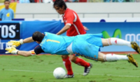Hay un momento en la vida, mientras creces, y si te lo pasas demasiado bien, que deseas un poco de sufrimiento. Es un anhelo inconsciente y falto de perspectiva pero es, creo, un impulso relativamente habitual en la adolescencia. Escuchas, por concretar, multitud de canciones que hablan de cosas que todavía no te han pasado, unas buenas, otras malas, y te gana el ansia de correr hacia adelante, quemar etapas y vivir todas esas experiencias que te cuentan los versos libres de las letras: amores, desamores, drogas, vida interior, revoluciones colectivas, viajes, sexo y demás. Uno quiere ser mayor, viejo, gordo incluso, y durante el camino busca cicatrices que le recuerden que sigue respirando. Cuando termina, cuando conoce ese millón de mundos por descubrir, se mira las manos, cuenta los dedos y reconoce: igual no era para tanto. Entonces, lo que desea es volver al cobijo del útero, sin más. Pero ya es tarde. A veces.
Quiero decir, uno alardea de resacas cuando todavía no sabe lo que es una de verdad.
Durante mucho tiempo, en ese sentido, la Selección fue un equipo adolescente. Escuchaba las canciones de sus mayores, tan ajenos, leía con desconfianza esas letras que no terminaba de entender. Sólo creía tener derecho a experimentar con el fracaso. Pero cuando aquel cúmulo de circunstancias, no pocas casuales, encaró al equipo hacia el éxito, todo cambió. Para empezar, halló acomodo en el mejor refugio para protegerse de la estupidez: la belleza. Después, comenzó a vivir, ahora sí, en el tobogán de promesas propias de las canciones. Lo bueno y lo malo, excepto la muerte: tuvo su Eurocopa, tuvo su Mundial, y tropezó en el contraste de la Confederaciones.
El desgaste, años más tarde, es el propio que deriva de la rutina. Al núcleo duro de ese grupo apenas le quedan rendijas por las que se podría colar la sorpresa, la excitación. No es nuevo, porque no en vano completar un ciclo como al que aspira España en la Euro ha sido una utopía para cualquiera. Los más grandes campeones han fracasado en el intento. Y es que el paso de la seguridad al exceso de confianza es demasiado pequeño. Sin dramas, los amistosos son síntomas de la doble velocidad del grupo. Nadie valora esas partes del proceso que ya se ha cansado de escuchar en miles de canciones, y de superar en anteriores curvas del trayecto a la victoria. La preparación se convierte en trámite y el relajo es peligroso. Porque todos somos conscientes de poseer un puñado de futbolistas de potencial maravilloso, una mezcla brillante de generaciones, y que ese equipo no saldrá con la “actitud Costa Rica” en el cruce de cuartos de la Eurocopa. Pero, a la vez, empezamos a dudar de su capacidad para recuperar, cuando lo desee, la esencia que los hizo campeones. Porque ya se sabe, al final del juego quieres volver a lo que fuiste. Pero es tarde. A veces.
foto: fifa.com

España: en la búsqueda del gol
Tue, 15 Nov 2011 17:10:49 +0000
Javi tiene dieciséis años. Como cualquier chaval de su edad en su cabeza no hay lugar para excesivas preocupaciones. Es un buen estudiante, deportista, educado y un hijo del que sus padres están orgullosos. Sabe que será algo importante en la vida. La gente se lo dice, e incluso sus amigos admiran su tenacidad y [...]
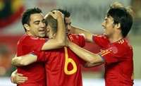
Javi tiene dieciséis años. Como cualquier chaval de su edad en su cabeza no hay lugar para excesivas preocupaciones. Es un buen estudiante, deportista, educado y un hijo del que sus padres están orgullosos. Sabe que será algo importante en la vida. La gente se lo dice, e incluso sus amigos admiran su tenacidad y su sentido de la responsabilidad. Pero, de un tiempo a esta parte, hay algo que no deja dormir tranquilo a Javi: le gusta una chica de su clase. Él cree tener sus pasos calculados. Piensa que conoce la llave mágica que abra las puertas del interés de su chica por él. Habla con ella y le lanza miradas furtivas en clase cuando cree que nadie se da cuenta. A veces incluso le acompaña hasta el portal de su casa. Son sus veinte minutos de gloria. Veinte minutos en los que percibe como ella le sonríe cada broma o cada ocurrencia y eso le hace levitar varios metros por encima del suelo en su paseo. Sabe que la tiene ahí, a punto de caramelo. Pero no acierta con el pase final. No termina de embocar su remate definitivo a gol. Su virtuosismo en el arte de la seducción adolescente se queda en un simple ejercicio estético, casi de manual… pero, desgraciadamente para él, sin fruto.
Cada semana, y de la mano de bwin.com, os ofreceremos los partidos más interesantes del fútbol mundial, con especial atención a todos aquellos que os manejáis en el mundo de las apuestas online.
Como a Javi, a España parece que se le resisten las chicas guapas. Domina como pocos equipos en el mundo el arte de la seducción futbolística. Controla los partidos, tira de oficio cuando es menester y monopoliza la posesión de balón. Tiene las mejores armas para ello. La mejor sonrisa, la mejor conversación, y un porte envidiable. Pero hay un problema de decisión a la hora de afrontar el envite final. Contra Inglaterra, el pasado sábado, los de Vicente del Bosque solo tiraron una vez entre los tres palos defendidos por Joe Hart en los noventa minutos de partido. Quizá el dato no fuera especialmente significativo si a los nuestros se les hubiese planteado un partido áspero, trabado y con la posesión de balón discutida. Pero no fue así. España acumuló un 68% de la posesión. Más de dos tercios del tiempo de juego se los pasó España buscando el remate definitivo que le llevase al gol. Más de dos tercios del partido ‘desperdiciados’ de manera infructuosa.
Mucho se ha hablado sobre el vicio oculto del estilo de juego de España (y, permítaseme, del Barça, su espejo principal si hablamos de clubes). Posesión de pelota indiscutible, casi abusiva… pero demasiado enredada. El juego combinativo en la zona de creación acaba convirtiéndose en una espiral sin salida. La propia inercia del virtuosismo termina por despedir con violencia cualquier posibilidad de acertar con el gol. O aparece el chispazo mágico (por suerte, España cuenta con un buen número de actores sobradamente capacitados para ello) o el remate se atraganta hasta convertirse casi en una obsesión. En Wembley no fue solo la casi insultante posesión de balón. Los nuestros botaron hasta seis corners. Ninguno de ellos acabó rematado entre los tres palos ingleses.
En cualquier caso, el señalado ‘problema’ de España no es nuevo. Como apuntaba un par de párrafos más arriba, al combinado nacional se le atragantan las chicas guapas. Tras el Mundial, ocurrió con Argentina, con Portugal, con Italia y, cuatro días atrás, con Inglaterra. Cuatro partidos ante selecciones de primer nivel y únicamente dos goles (el de Llorente en Buenos Aires y el de Xabi Alonso, de penalty, en Bari). Vamos, que nosotros nos lucimos, nos pavoneamos, exhibimos maneras… pero la chica se la acaba llevando el primer macarra que aparece por el barrio subido en un pepino de cincuenta.
Ante Costa Rica, sin duda una selección menor, Del Bosque tratará de probar soluciones en busca del remate y del gol. Con Fernando Llorente, que apuntaba a delantero titular, renqueante por un problema en su rodilla, todo parece indicar que será el otro Fernando del grupo, Torres, el que busque reencontrarse con el gol. Será una buena oportunidad de recuperar un protagonismo que el fuenlabreño parece haber perdido, al menos a ojos de los aficionados. Junto a él, la previsible vuelta al equipo del sevillista Jesús Navas, en un evidente intento de no superpoblar la zona central del campo y abrir el juego hacia ese espacio aparentamente baldío para los nuestros que es la banda.
España no enlaza dos partidos consecutivos sin marcar desde hace cinco años. Vamos, desde nuestra ‘otra vida’. Acabar el año con victoria y, sobre todo, ahuyentando los fantasmas que revolotean alrededor del combinado a siete meses vista de la Eurocopa. Al fin y al cabo, la chica guapa sigue estando ahí, a nuestro alcance.
Las apuestas on line en bwin.com dan como clara favorita al triunfo a la selección española. Su victoria se paga a 1.20 euros por euro apostado, mientras que el empate y la victoria costarricense cotizan a 5.75 y 13.50, respectivamente. No seamos falsos victimistas. Parece poco probable que España se deje sorprender hoy por los Ticos, 62ª selección en el ránking FIFA. Vamos a tirar de optimismo y confiar en la redención goleadora de los nuestros: que se anoten más de 2.5 goles en el primer tiempo presenta una interesante cuota de 5.25 euros por euro apostado, nuestra apuesta personal para el partido.
Camisetas clásicas: el viaje iniciático
Mon, 14 Nov 2011 02:44:12 +0000
No tengo dudas, al principio fue el Athletic. Pese a que a los cinco o seis años de edad la memoria no entiende de selección y prioridades, tengo la fortuna de guardar un vivísimo recuerdo de mis primeras experiencias futboleras. Eran tiempos de gloria. El Athletic había conquistado su segunda Liga consecutiva. Ese año, el [...]
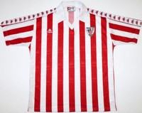
No tengo dudas, al principio fue el Athletic. Pese a que a los cinco o seis años de edad la memoria no entiende de selección y prioridades, tengo la fortuna de guardar un vivísimo recuerdo de mis primeras experiencias futboleras. Eran tiempos de gloria. El Athletic había conquistado su segunda Liga consecutiva. Ese año, el equipo rojiblanco culminaba la temporada más grande de su historia reciente con el título de Copa. Dos días después de que Dani Ruiz Bazán alzara al cielo de Madrid la última Copa conquistada por el Athletic, allí estaba yo, al pie de la Ría, entre asustado y alucinado por verme en medio de aquella inolvidable marea humana vestida de rojo y blanco. No entendía muy bien el por qué de semejante revuelo (apenas tenía seis años). Lo único que alcanzaba a comprender a la perfección era el significado de llevar puesta una camiseta rojiblanca de algodón con un siete de fieltro negro en la espalda, cosido por mi madre el día antes de la Final de Copa. Orgulloso e incrédulo, cada pocos minutos bajaba la mirada para verme a mí mismo vestido de arriba a abajo como mis ídolos. Aquello fue el comienzo.
De la mano de Classic Football Shirts , la tienda especializada en camisetas antiguas, nos acercamos al fútbol con una perspectiva diferente, desde los uniformes con los que se ha construído la historia del deporte rey.
Mi primera camiseta del Athletic Club vino acompañada (o precedida, ya no lo recuerdo muy bien) por una del Real Betis y otra del FC Barcelona. No me pregunten el por qué precisamente fueron aquellos equipos. Imagino que las ‘heredé’ de algún primo mayor o quizá su origen fuese incluso más prosaico. Fue suficiente para afianzar mi pasión.
Mi adolescencia, a mediados de los años 90, coincidió con el boom del merchandising futbolístico. La condición ideal para comenzar a cultivar, por fin, con un mínimo (muy mínimo) poder adquisitivo en el bolsillo mi creciente querencia por aquellas camisetas que mi madre detestaba y mis colegas envidiaban. Cada viaje al extranjero implicaba un recuerdo futbolístico-textil. Eran los años de la Juventus de Roberto Baggio, el Inter de Dennis Bergkamp o Rubén Sosa y el Blackburn Rovers campeón de la Premier League con Alan Shearer o Tim Sherwood en sus filas. Todas ellas, preciadísimos tesoros, fueron cayendo en mis manos.
Con el paso de los años, mi colección fue creciendo. Recuerdo con cierto espanto aquella horrible camiseta con diseño en forma de rombos que España lució en el Mundial de Estados Unidos. Me hice con ella, repleto de ilusión, la tarde del día en el que Corea del Sur nos bajó los humos a las primeras de cambio. Fue un presagio de lo que posteriormente acabaría ocurriéndonos en aquel torneo.
Desde aquella camiseta de la selección, muchas de las que forman parte de mi ya extensísima colección están asociadas a un recuerdo muy vivo. La que intercambié con un seguidor villain a las puertas de San Mamés el día que el Athletic recibía en Copa de la UEFA al Aston Villa. O aquella camiseta del gran Parma de finales de los 90, que me llevó a recorrerme las calles de la capital emiliana como un poseso en busca del principal aliciente de mi visita a la ciudad.
Cuando mi colección empezó a cobrar dimensiones descontroladas, decidí que era momento de ‘especializarla’. Camisetas de clubes de países o ligas muy concretos, de selecciones que nunca hubiesen disputado un Mundial o de clubes ya desaparecidos (así, mi última y reciente adquisición). Pero no es suficiente. En realidad, nunca es suficiente. Siempre hay alguna, moderna o clásica, que quiero llevar al armario de las camisetas. Siempre hay sitio para una más, a pesar de las… (he perdido la cuenta) muchas que integran ya la colección. Es una fiebre que, desde aquel viaje iniciático ante la Gabarra en la primavera del 84, no parece tener fin.
Puedes comprar esta camiseta y cientos más en Classic Football Shirts.